دليل عملي مصوَّر يشرح النظام شاشةً شاشة: من تسجيل الدخول إلى إقفال الشهر — الموظفون، الرواتب، المستحقات، النماذج، الفواتير، الشيكات، البنوك، المعدات، التقارير، الطباعة، والنسخ الاحتياطي.
شركة المنار الدولية لإنشاء وصيانة الشوارع والأرصفة ومستلزمات الطرق ذ.م.م
دولة الكويت — العملة: الدينار الكويتي (د.ك) بثلاث خانات عشرية
ما الذي يغطّيه هذا الدليل، ولمن كُتب، وكيف تقرأ رموزه.
كُتب هذا الدليل لثلاثة أنواع من المستخدمين داخل شركة المنار:
| القارئ | ما الذي يجده هنا | الفصول الأهم له |
|---|---|---|
| المدير المدير | المتابعة والاعتماد واتخاذ القرار: لوحة التحكم، الاعتمادات، مركز انتهاء الوثائق، التقارير التنفيذية، الصلاحيات. | ٣، ٤، ١٦، ٢٠، ٢٤ |
| المحاسب المحاسب | الدورة المالية كاملة: الفواتير، المصروفات، الرواتب، المستحقات، الشيكات، البنوك، القيود، الكشوف. | ٦، ٧، ١٠–١٤، ١٧، ٢٥ |
| المستخدم الإداري | العمل اليومي على الموظفين والنماذج والمستندات والطباعة. | ٥، ٨، ٩، ١٥، ٢١ |
يغطّي الدليل كل شاشة يصل إليها المستخدم في إصدار سطح المكتب 2026.5.9: ٣١ فصلًا و٧٥ صورة مأخوذة من النظام نفسه. لكل وحدة: الغرض منها، مكان الوصول إليها، الخطوات العملية، الحالات التي قد تراها، وما يجب الانتباه له.
لا يشرح هذا الدليل التركيب البرمجي للنظام ولا قاعدة البيانات ولا إعدادات الخوادم. كما لا يشرح شاشات داخلية غير معروضة في قائمة التنقّل ولا تدخل في سير العمل اليومي — وقد ذُكرت هذه الشاشات ومبرّر استبعادها في مصفوفة التغطية المرافقة للدليل.
| الرمز | معناه |
|---|---|
| المدير | إجراء يخصّ المدير عادةً. |
| المحاسب | إجراء يخصّ المحاسب عادةً. |
| كلاهما | إجراء مشترك. |
| صندوق أزرق | معلومة توضيحية تساعدك على الفهم. |
| صندوق أخضر | نصيحة عملية توفّر عليك وقتًا أو خطأً. |
| صندوق برتقالي | تنبيه: انتبه قبل التنفيذ. |
| صندوق أحمر | تحذير: إجراء لا يمكن التراجع عنه، أو خطأ محاسبي محتمل. |
| /salaries | عنوان الشاشة داخل النظام — لا تحتاج لكتابته، إنما يفيد للإشارة الدقيقة. |
| «نصّ بين علامتَي تنصيص» | نصّ يظهر لك حرفيًا على الشاشة (اسم زرّ أو حقل أو رسالة). |
العمليات المهمة مشروحة بالنمط نفسه في كل الفصول:
ما تراه على شاشتك يعتمد على صلاحياتك. إذا لم تجد زرًّا أو صفحةً مذكورةً هنا، فالسبب غالبًا أن دورك لا يملك صلاحيتها — راجع الفصل ٤، أو اطلب من مدير النظام تعديل دورك.
جميع الصور مأخوذة من النظام الفعلي بإصدار 2026.5.9، لكنها التُقطت على نسخة بيانات تجريبية معزولة: الأسماء والأرقام المدنية وأرقام الحسابات فيها بيانات توضيحية وليست بيانات الشركة الحقيقية. الشاشات والأزرار والحقول هي نفسها التي ستراها.
ما هو النظام، وماذا يقدّم، وأين تُحفظ بياناتك.
المنار ERP نظام متكامل لإدارة أعمال شركة المنار الدولية: يجمع في برنامج واحد إدارة الموظفين ورواتبهم ومستحقاتهم، والعملاء والعقود والفواتير، والمصروفات والشيكات والحسابات البنكية، والمعدات وصيانتها وتأمينها، إضافة إلى النماذج الرسمية والتقارير والقيود المحاسبية.
النظام عربي الواجهة بالكامل، ويعمل بالدينار الكويتي بثلاث خانات عشرية، ويمكن تبديل واجهته إلى الإنجليزية من زرّ EN أعلى الشاشة.
| المجموعة | الوحدات |
|---|---|
| العمليات الأساسية | اتفاقيات الأسعار · تحليل الشغل والعمولة · العملاء والجهات · المعدات والآليات · صيانة المعدات · تأمين المركبات · الموظفون والكوادر · مستحقات الموظف الشهرية · الحضور والانصراف · إدارة العقود |
| الشؤون الإدارية | النماذج الإدارية (١٥ نموذجًا رسميًا) ومحرر الخطابات |
| الإدارة المالية | الفواتير والمطالبات · المصروفات والتشغيل · إدارة الشيكات · البنوك والحسابات · الرواتب · الموردون · القيود المحاسبية · المركز المالي · العمليات المالية التنفيذية · مركز التحليل المالي |
| البنوك | تحليلات الرواتب البنكية · الحسابات البنكية · مستعرض الحسابات |
| المستودع | المخزون والمشتريات |
| النظام | مركز انتهاء الوثائق · مركز القرار التنفيذي · التقارير الشاملة · الصلاحيات والمستخدمين · سجل التدقيق · النسخ الاحتياطي · إعدادات الشركة · مركز التكاملات |
| الأدوات والذكاء الاصطناعي | استيراد البيانات · المساعد الذكي |
النظام يعمل محليًا على جهازك — لا يحتاج إلى إنترنت للعمل اليومي. كل البيانات محفوظة في ملف قاعدة بيانات واحد على الجهاز نفسه. وهذا يعني عمليًا:
خذ نسخة احتياطية بانتظام، وتأكّد من وجود نسخة خارج الجهاز (وحدة تخزين خارجية أو المزامنة السحابية). عطل قرص واحد بلا نسخة احتياطية يعني ضياع سجلّ الشركة بالكامل.
أول خمس دقائق مع النظام: كيف تدخل، وكيف تقرأ الشاشة، وكيف تتنقّل بسرعة.
الدخول إلى النظام بحسابك الشخصي، فكل عملية تُسجَّل باسمك في سجل التدقيق.
الخطواتإذا سُلّمك الحساب بكلمة مرور افتراضية، غيّرها فورًا بعد أول دخول. ولا تشارك حسابك مع زميل: مشاركة الحساب تُفقِد سجل التدقيق قيمته كلها، فتصبح كل العمليات منسوبة لشخص واحد.
تنتهي جلستك تلقائيًا بعد ١٢ ساعة، وعندها يطلب النظام تسجيل الدخول من جديد. إذا ظهرت لك شاشة الدخول فجأة أثناء العمل فهذا هو السبب — احفظ عملك أولًا بأول.
تنقسم الشاشة إلى ثلاث مناطق ثابتة في كل صفحات النظام:
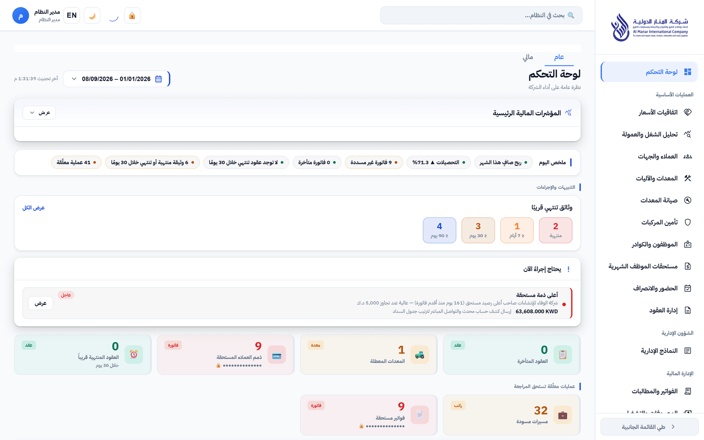
| العنصر | ماذا يفعل |
|---|---|
| «بحث في النظام…» | بحث فوري عبر كل الوحدات — اكتب اسم موظف أو رقم فاتورة أو اسم عميل. |
| 🔒 / 🔓 | وضع الخصوصية. يبدأ مفعّلًا دائمًا عند كل تشغيل، ويُخفي المبالغ الحسّاسة على الشاشة. اضغطه لإظهار المبالغ، وسيعود مفعّلًا تلقائيًا في التشغيل التالي. |
| 🌙 / ☀️ | تبديل الوضع الفاتح والوضع الداكن. |
| EN / ع | تبديل لغة الواجهة بين العربية والإنجليزية. |
| اسم المستخدم | الضغط عليه يسجّل الخروج مباشرة — انتبه، لا توجد قائمة منسدلة. |
اتركه مفعّلًا عند فتح النظام أمام زائر أو أثناء عرض الشاشة على جهاز عرض: تبقى الشاشات كلها قابلة للاستخدام لكن المبالغ مخفيّة. وهو لا يؤثر على الطباعة أبدًا.
اضغط أي عنصر في الشريط الجانبي لفتح صفحته. لتوسيع مساحة العمل اضغط «طي القائمة الجانبية» في أسفل الشريط؛ تتحوّل القائمة إلى أيقونات فقط، ويظهر اسم كل وحدة عند مرور المؤشر عليها.
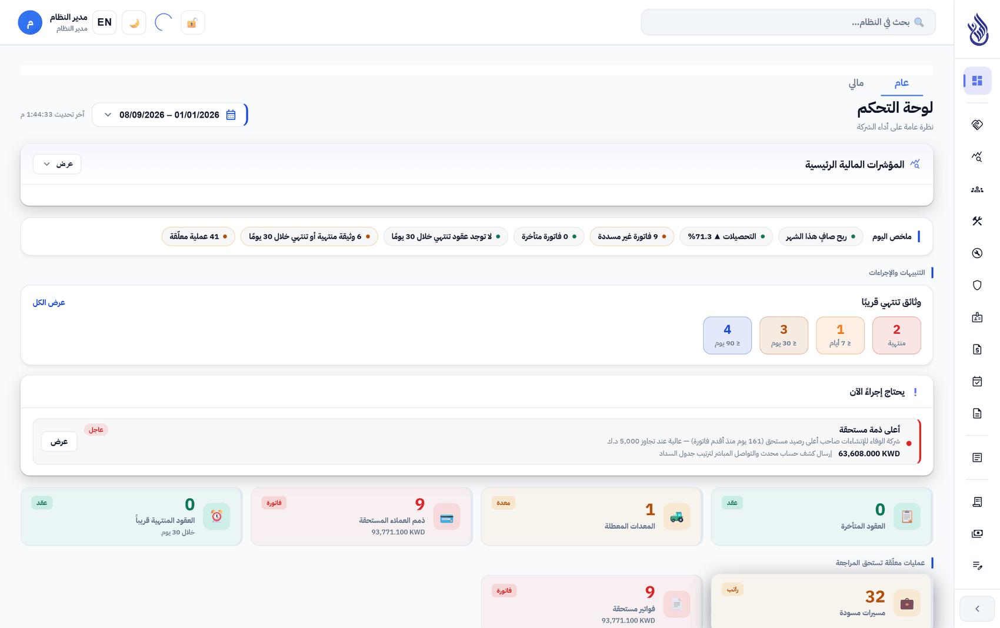
لسببين: إمّا أن دورك لا يملك صلاحيتها (الفصل ٤)، أو أنها أُخفيت يدويًا من «إعدادات الشركة ← إدارة الشريط الجانبي» (الفصل ٢٣). الصلاحية تسبق الإخفاء دائمًا: ما لا تملك صلاحيته لن يظهر مهما كانت إعدادات الإظهار.
الوصول إلى سجل بعينه دون الدخول إلى وحدته والبحث فيها.
الخطوات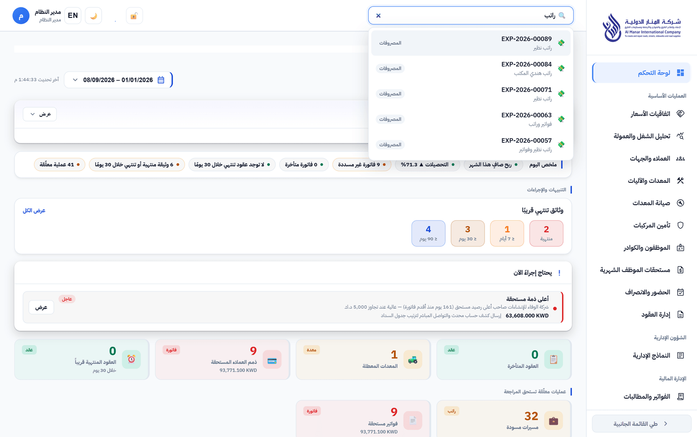
في أعلى عدد من الصفحات (لوحة التحكم، المصروفات، التقارير، مركز القرار التنفيذي) يوجد محدِّد فترة يعرض تاريخين، مثل 01/01/2026 – 08/09/2026. هذا هو نطاق الفترة المالية الذي تُحسب على أساسه أرقام تلك الصفحة.
أكثر سوء فهم شائع في النظام هو قراءة رقم إجمالي دون الانتباه إلى الفترة المحدَّدة. قبل أن ترفع رقمًا إلى الإدارة أو تعتمده في تقرير، تأكّد من نطاق التاريخ أعلى الصفحة.
لوحة التحكم لها تبويبان: «عام» و«مالي». وترتيب أقسامها مقصود: الأهم أولًا.
| القسم | ما يخبرك به |
|---|---|
| المؤشرات المالية الرئيسية | الإيرادات والمصروفات والربح ونِسَب التحصيل للفترة المحدَّدة. |
| ملخص اليوم | سطر واحد سريع: فواتير غير مسددة، فواتير متأخرة، وثائق تنتهي خلال ٣٠ يومًا، عمليات معلّقة. |
| وثائق تنتهي قريبًا | عدّادات حسب المدة: منتهية، ≥ ٧ أيام، ≥ ٣٠ يومًا، ≥ ٩٠ يومًا. الضغط على «عرض الكل» يفتح مركز انتهاء الوثائق. |
| يحتاج إجراءً الآن | أهم قسم للمدير. أعلى ذمة مستحقة، عقود منتهية، معدات معطلة، شيكات غير مطبوعة — كل بند بزرّ «عرض» ينقلك إلى السجل. |
| عمليات معلّقة تستحق المراجعة | عدد الفواتير المستحقة ومسيّرات الرواتب المسوَّدة التي تنتظر قرارك. |
| آخر الفواتير / آخر المصروفات / آخر النشاطات | نظرة سريعة على أحدث الحركات مع «عرض الكل». |
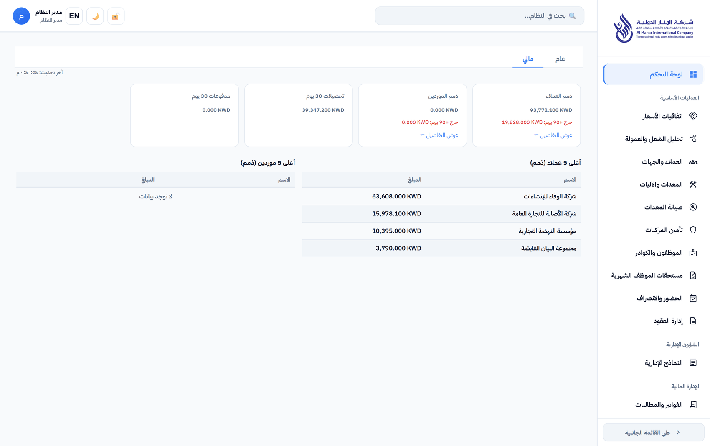
معظم شاشات النظام مبنيّة على النمط نفسه؛ إذا أتقنته أتقنت النظام كلّه:
| العنصر | ماذا يفعل |
|---|---|
| رأس الصفحة | عنوان الوحدة ووصفها، وشارات إحصائية سريعة، وزرّ الإجراء الرئيسي (مثل «إضافة موظف» أو «شيك جديد»). |
| بطاقات المؤشرات | أرقام ملخَّصة للفترة أو للتصفية الحالية. البطاقة الملوّنة هي المؤشر الأهم. |
| شريط الأدوات | حقل البحث، القوائم المنسدلة للتصفية، وأزرار التصدير (Excel). |
| شرائح الحالة | أزرار دائرية للتصفية السريعة حسب الحالة: «كل الحالات» / «مسودة» / «معتمد» … |
| الجدول | اضغط رأس العمود للترتيب. اضغط أي صفّ لفتح لوحة التفاصيل الجانبية. |
| لوحة التفاصيل (الدرج) | تنفتح من الجانب وتعرض كامل بيانات السجل مقسَّمة إلى أقسام، وفي أسفلها أزرار الإجراءات (تعديل، اعتماد، طباعة، حذف). أغلقها بمفتاح Esc. |
من يرى ماذا، ومن يستطيع أن يفعل ماذا. المدير
القاعدة بسيطة وذات مستويين:
لا توجد صلاحيات فردية لمستخدم بعينه: إن أردت تغيير ما يستطيع شخص فعله، فأنت تغيّر دوره. وكل صلاحية في النظام مكوّنة من جزأين: الوحدة والإجراء — مثل «الرواتب + اعتماد».
| الدور | الاستخدام العملي | عدد الصلاحيات |
|---|---|---|
| مدير النظام | صلاحية كاملة على كل شيء، بما فيها إدارة المستخدمين والنسخ الاحتياطي والإعدادات. | 162 |
| المدير العام | الاطّلاع الشامل والاعتماد عبر كل الوحدات تقريبًا. | 156 |
| المحاسب | الدورة المالية: الفواتير، المصروفات، الرواتب، الشيكات، البنوك، القيود، التقارير. | 94 |
| مسؤول الموارد البشرية | الموظفون، الحضور، النماذج، المستحقات. | 42 |
| مدير العقود | العملاء والعقود والأسعار. | 35 |
| مسؤول المعدات | المعدات والصيانة وتأمين المركبات. | 29 |
| مستخدم عادي | اطّلاع محدود جدًا. | 7 |
دور «مدير النظام» يتجاوز فحص الصلاحيات كلّه: يرى كل صفحة ويستطيع كل إجراء، بغضّ النظر عن الصلاحيات المعروضة في بطاقة الدور. لذلك امنح هذا الدور لأقل عدد ممكن من الأشخاص.
| الوظيفة | المدير العام | المحاسب |
|---|---|---|
| لوحة التحكم والتقارير | نعم | نعم |
| مركز القرار التنفيذي | نعم | حسب منح الصلاحية |
| الرواتب: إنشاء واعتماد وصرف | نعم | نعم |
| الفواتير والمصروفات والشيكات | نعم | نعم |
| القيود المحاسبية والمركز المالي | نعم | نعم |
| إدارة المستخدمين والأدوار | محدود | لا |
| النسخ الاحتياطي والمزامنة | محدود | لا |
| معايرة طباعة الشيك | تتطلب صلاحية تعديل الإعدادات | |
| تجاوز قفل الفترة المالية | غير ممنوحة افتراضيًا لأي دور | |
الشريط الجانبي ← النظام ← الصلاحيات والمستخدمين /users
الخطواتيظهر المستخدم في الجدول بحالة «نشط»، ويستطيع الدخول فورًا بالبيانات التي أعطيته إياها.
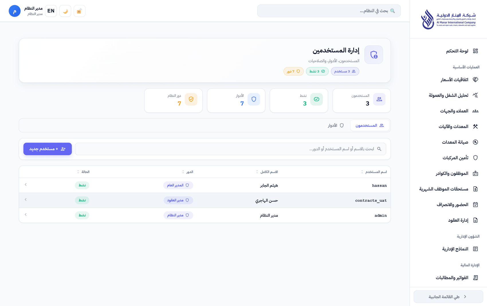
بعد إنشاء الحساب لا يمكن تعديل «اسم المستخدم» — يظهر الحقل عند الإنشاء فقط. اختر الاسم بعناية من أول مرة.
لإيقاف وصول موظف ترك العمل، افتح صفّه واضغط «تعطيل». الحساب يبقى موجودًا في السجل — وهو ما تريده: العمليات التي نفّذها سابقًا تبقى منسوبة إليه في سجل التدقيق.
إعادة تسمية حساب موظف سابق وإعطاؤه لموظف جديد تخلط تاريخ العمليات بين شخصين. عطِّل القديم وأنشئ حسابًا جديدًا.
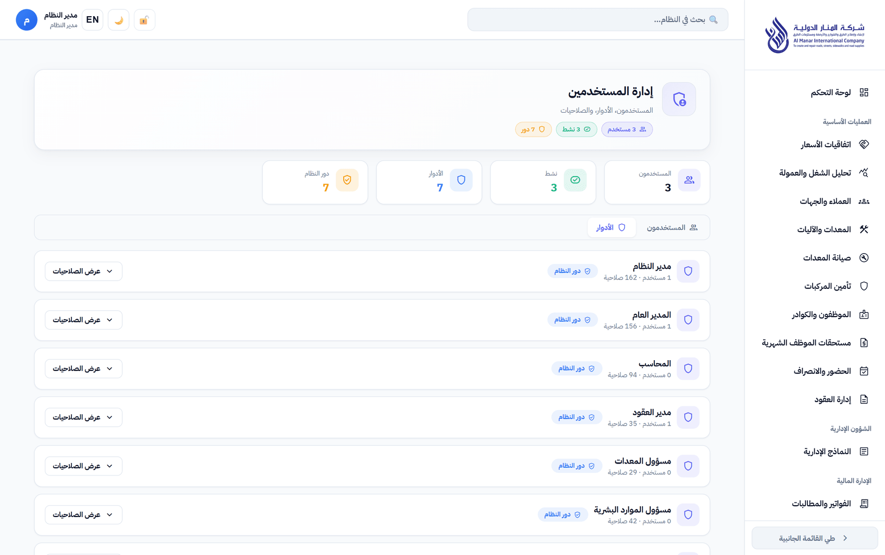
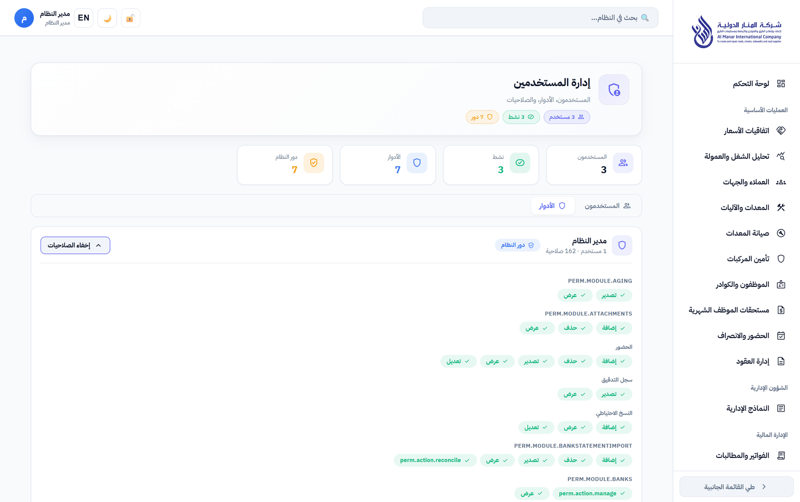
شاشة «الأدوار» للعرض فقط في هذا الإصدار: لا يوجد فيها زرّ حفظ لتغيير صلاحيات دور. توزيع الصلاحيات على الأدوار مُهيَّأ مسبقًا مع النظام، وتعديله إجراء فنّي يحتاج إلى الجهة التي تدعم النظام. أمّا ما تستطيع فعله من الواجهة فهو نقل المستخدم من دور إلى دور — وهذه هي الأداة العملية بين يديك.
بعض الإجراءات لا يمنحها مجرّد حقّ التعديل، لأنها غير قابلة للتراجع أو ذات أثر رسمي. لكل منها صلاحية خاصة:
| الإجراء | لماذا صلاحية مستقلة |
|---|---|
| تسجيل خطاب وإصدار رقم مرجعي | الرقم المرجعي دائم ويُجمِّد محتوى الخطاب. |
| عكس قيد محاسبي | يؤثر في الدفاتر ولا يُمحى. |
| تجاوز قفل الفترة المالية | يسمح بالكتابة في فترة مقفلة — غير ممنوحة لأي دور افتراضيًا، وكل استخدام لها مسجَّل. |
| اعتماد الرواتب وصرفها | صلاحيتان منفصلتان: من يعتمد قد لا يكون من يصرف. |
| طباعة الشيك | الطباعة على ورق بنكي حقيقي إجراء مادي لا رجعة فيه. |
سجلّ الموظفين هو الأساس الذي تقوم عليه الرواتب والمستحقات والنماذج ومركز انتهاء الوثائق. كلاهما
الوصول: الشريط الجانبي ← العمليات الأساسية ← الموظفون والكوادر /employees
هذه الصفحة هي المصدر الرسمي لبيانات الموظف: اسمه، رقمه المدني، مهنته، راتبه الأساسي، وتواريخ انتهاء إقامته وجوازه ورخصة قيادته. أي تعديل هنا ينعكس تلقائيًا في مركز انتهاء الوثائق وفي احتساب الرواتب والمستحقات.
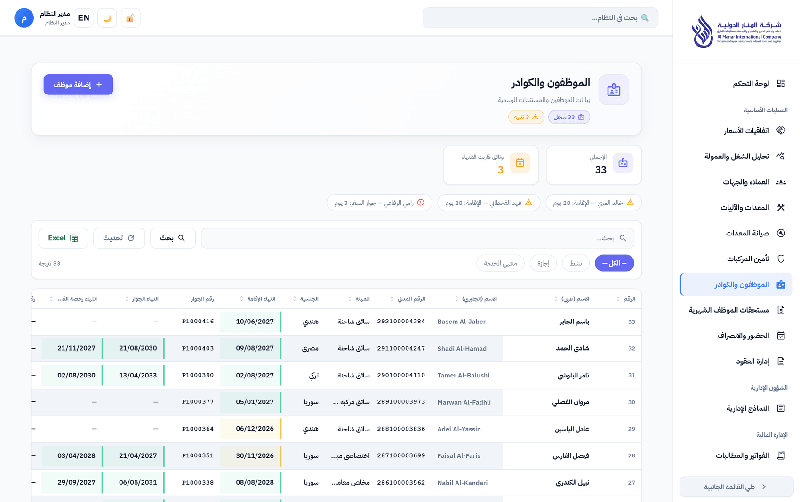
| العمود | ملاحظة |
|---|---|
| الرقم | الرقم الوظيفي — عمود مثبَّت، يُرتَّب رقميًا لا أبجديًا. |
| الاسم (عربي) | عمود مثبَّت. |
| الاسم (إنجليزي) | يُستخدم في المستندات الإنجليزية والملفات البنكية. |
| الرقم المدني · المهنة · الجنسية | بيانات تعريفية. |
| انتهاء الإقامة | ملوّن حسب قرب الانتهاء. |
| رقم الجواز · انتهاء الجواز | ملوّن حسب قرب الانتهاء. |
| انتهاء رخصة القيادة | ملوّن حسب قرب الانتهاء. |
| رقم لوحة المركبة | مرجع فقط — تسجيل المركبة نفسه في وحدة المعدات. |
| الراتب الشهري · تاريخ التعيين | يدخلان في احتساب الرواتب والأهلية. |
| الحالة | نشط / إجازة / منتهي الخدمة. |
يُنشأ الموظف بحالة «نشط» افتراضيًا، ويصبح مؤهَّلًا لتوليد الرواتب فورًا.
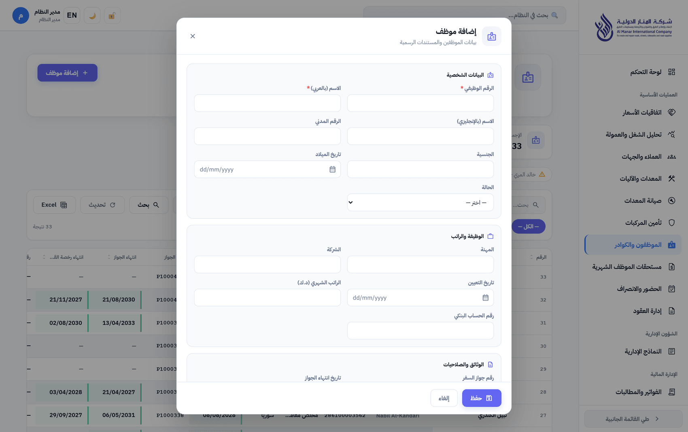
النظام لا يُلزمك إلا بـ«الرقم الوظيفي» و«الاسم بالعربي». لكن حفظ موظف بلا راتب أساسي أو بلا تاريخ تعيين يُنتج لاحقًا كشف راتب بقيمة صفر أو يستبعده من التوليد. أكمل هذين الحقلين دائمًا عند إضافة موظف جديد.
تاريخ انتهاء تسجيل المركبة يُدخل في وحدة «المعدات والآليات»، وتاريخ انتهاء تأمينها في وحدة «تأمين المركبات». حقل «رقم لوحة المركبة» هنا للربط المرجعي فقط.
| الحالة | متى تستخدمها | أثرها على الرواتب |
|---|---|---|
| نشط | الموظف على رأس العمل. | يدخل في التوليد الجماعي للرواتب. |
| إجازة | الموظف في إجازة طويلة. | يُستبعد من التوليد الجماعي، لكن يمكن توليد كشفه بإفراده في قائمة الموظف. |
| منتهي الخدمة | انتهت علاقته بالشركة. | يرفض النظام إنشاء كشف راتب له نهائيًا. كشوفه السابقة تبقى كما هي. |
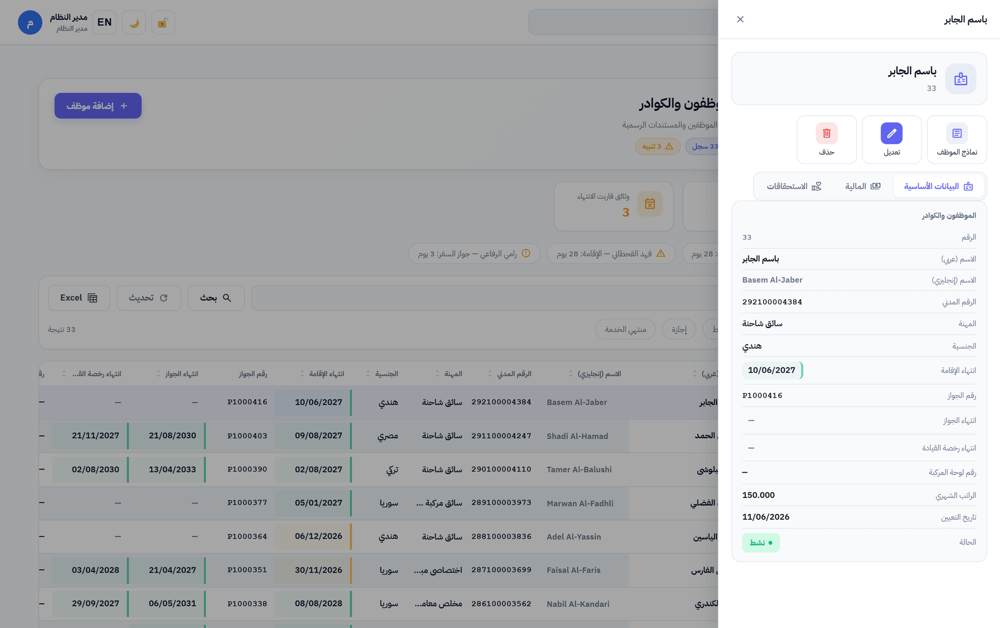
أعمدة قالب استيراد الموظفين: الرقم الوظيفي (مطلوب)، الاسم بالعربي (مطلوب)، الاسم بالإنجليزي، الرقم المدني، المهنة، الجنسية، رقم جواز السفر وتاريخ انتهائه، تاريخ انتهاء الإقامة، تاريخ انتهاء رخصة القيادة، رقم لوحة المركبة، تاريخ الميلاد، الشركة، القسم، الراتب الشهري، تاريخ التعيين، الهاتف، البريد الإلكتروني، العنوان، حالة الموظف، ملاحظات. التواريخ بصيغة YYYY-MM-DD.
الوصول: الشريط الجانبي ← العمليات الأساسية ← الحضور والانصراف /attendance
تُستخدم لتسجيل أيام الحضور والغياب والتأخير والساعات الإضافية. هذه السجلات تدخل في احتساب كشف الراتب عند التوليد: أيام الحضور والغياب والإجازة والتأخير والساعات الفعلية والإضافية تُقرأ من هنا.
إذا لم تُدخل سجلات حضور لشهرٍ ما، يُولَّد كشف الراتب على الراتب الأساسي والبدلات والخصومات المسجَّلة فقط. هذا سلوك سليم، لكن انتبه إلى أن أي خصم غياب لن يُحتسب تلقائيًا.
الوصول: من صفحة الموظفين، افتح ملف الموظف ← تفاصيل مستحقات الموظف
شاشة منفصلة تمامًا عن «مستحقات الموظف الشهرية» (الفصل ٧). تختصّ بـ: رصيد الإجازة السنوية، ومكافأة نهاية الخدمة، والتصفية النهائية عند انتهاء الخدمة. للتصفية دورة حياة خاصة: مسودة تُحتسب حيًّا ← لقطة معتمدة مجمَّدة ← مسدَّدة.
«مستحقات الموظف الشهرية» (الفصل ٧) وحدة شهرية للعمل الإضافي والاستحقاقات والاستقطاعات. أمّا «تفاصيل مستحقات الموظف» فتخصّ الإجازة ونهاية الخدمة والتصفية. الاسمان متشابهان والوظيفتان مختلفتان تمامًا.
إنشاء الرواتب الشهرية واعتمادها وصرفها وتصدير ملف التحويل البنكي. المحاسب
الوصول: الشريط الجانبي ← الإدارة المالية ← الرواتب /salaries
الصفحة أربعة تبويبات:
| التبويب | الغرض |
|---|---|
| كشوف الرواتب | التبويب الرئيسي: التوليد والاعتماد والصرف. |
| السجل المستورد | تحويلات الرواتب المستوردة من ملفات البنك (سجل تاريخي للقراءة). |
| التصدير البنكي | توليد ملف تحويل الرواتب بصيغة البنك. |
| كشف المستحقات الشهرية | اعتماد وتصدير الكشف البنكي لمستحقات الموظفين (وحدة مستقلة — الفصل ٧). |
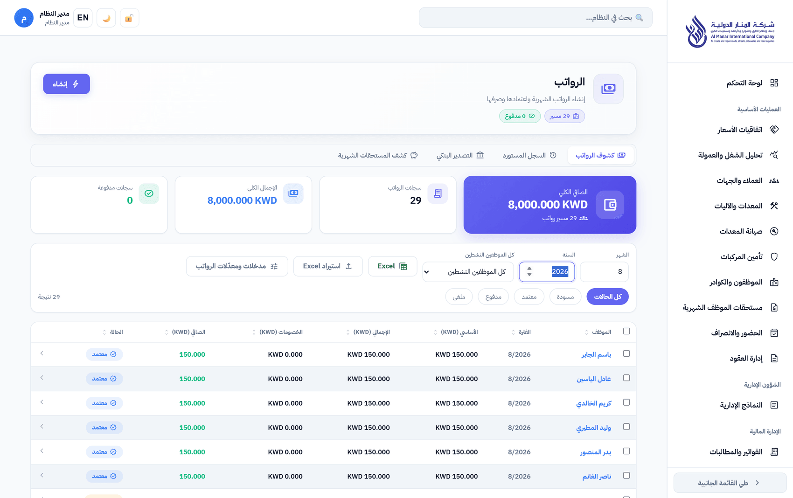
التوليد الجماعي يشمل الموظف إذا تحقّق شرطان معًا:
| الحالة | التوليد الجماعي | توليد فردي (باختيار الموظف) |
|---|---|---|
| نشط | يدخل | ممكن |
| إجازة | لا يدخل | ممكن — استثناء مقصود: اختر الموظف بالاسم ثم اضغط «إنشاء». |
| منتهي الخدمة | لا يدخل | مرفوض: «لا يمكن إنشاء راتب لموظف منتهي الخدمة.» |
توليد كشوف الرواتب لفترة محدَّدة، محسوبةً من الراتب الأساسي والحضور والبدلات والخصومات والسلف.
الخطواتتظهر الكشوف في الجدول بحالة «مسودة»، مع بطاقات المؤشرات: الصافي الكلي، عدد السجلات، الإجمالي الكلي، السجلات المدفوعة.
الضغط على «إنشاء» مرة أخرى لنفس الفترة لا يُتلف شيئًا: الكشوف المسودة يُعاد حسابها بالبيانات المحدَّثة، والكشوف المعتمدة أو المدفوعة تُترك كما هي دون مساس، والموظفون الجدد تُنشأ لهم كشوف. لذلك إذا أضفت بدلًا أو سلفة بعد التوليد، فأعد الضغط على «إنشاء» ليُحتسب.
إذا وُجد في الفترة موظفون نشطون مؤهَّلون بلا كشف، يعرض النظام شريطًا تنبيهيًا برتقاليًا أعلى الجدول بنصّ: «يوجد {عدد} موظفين نشطين بلا كشف راتب لهذه الفترة»، يليه أسماؤهم وأرقامهم الوظيفية، وزرّ «إنشاء» لتوليد كشوفهم مباشرة.
لا يتأثر هذا الشريط بشرائح تصفية الحالة، فلا يمكن لتصفية منسيّة أن تخفيه عنك. كما أنه لا يظهر لفترة لم تبدأ بعد. لا تُنهِ مسير الشهر وهذا الشريط ظاهر.
اضغط أي صفّ لفتح لوحة التفاصيل، وفيها أقسام: بيانات الموظف · الراتب · البدلات · الخصومات والسلف · الدفع.
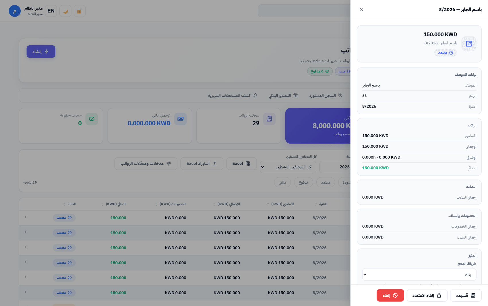
| الانتقال | الزرّ | الشروط والقيود |
|---|---|---|
| — ← مسودة | «إنشاء» | حسب قاعدة الأهلية (٦-٢). |
| مسودة ← معتمد | «اعتماد» | يُرفض إن كان الكشف معتمدًا أو مدفوعًا أو ملغى. |
| معتمد ← مسودة | «إلغاء الاعتماد» | الطريق الوحيد لتعديل كشف معتمد. يُرفض بعد الصرف. |
| معتمد ← مدفوع | «صرف» | يجب أن يكون معتمدًا أولًا: «يجب اعتماد كشف الراتب قبل الصرف». |
| مسودة/معتمد ← ملغى | «إلغاء» | يُرفض للكشف المدفوع. |
لا يوجد في النظام إجراء لإلغاء الصرف. بعد الضغط على «صرف» يصبح الكشف مقفلًا نهائيًا: لا تعديل ولا إلغاء اعتماد ولا إلغاء. راجع المبلغ قبل الصرف، لا بعده.
حدِّد عدة صفوف بمربّعات الاختيار فيظهر شريط: «تم تحديد {عدد} كشف راتب» مع أزرار «اعتماد» و«إلغاء الاعتماد» و«إلغاء التحديد».
عند الصرف تختار «طريقة الدفع»:
وحقل «تاريخ الصرف» اختياري: إن تركته فارغًا يُرحَّل بآخر يوم في شهر الراتب.
صرف الراتب في هذه الوحدة لا يُنشئ قيدًا في دفتر اليومية. هذا قرار تشغيلي مقصود: مصروف الرواتب يُسجَّل يدويًا من وحدة «المصروفات والتشغيل». إن لم تسجّله هناك، فلن يظهر في قائمة الأرباح والخسائر.
مبالغ كشف الراتب محسوبة آليًا ولا تُكتب يدويًا في الجدول. التعديل يتمّ عبر ثلاثة مسارات:
| المسار | الأثر | شرط الحالة |
|---|---|---|
| «مدخلات ومعدّلات الرواتب» — بند يدوي على مسودة | يضيف بدلًا أو خصمًا لمرة واحدة على كشف بعينه، ثم يُعاد حساب الإجماليات. | مسودة فقط |
| «مدخلات ومعدّلات الرواتب» — مدخلات دورية | بدل متكرر / خصم متكرر / سلفة على مستوى الموظف — تؤثر في التوليد القادم. | أي وقت |
| تعديل الراتب الأساسي أو الحضور | يستلزم إعادة الضغط على «إنشاء» ليُعاد حساب المسودات. | مسودة فقط |
اضغط «إلغاء الاعتماد» ليعود مسودة ← عدّل ← ثم «اعتماد» من جديد. وهذا غير ممكن إن كان الكشف قد صُرف.
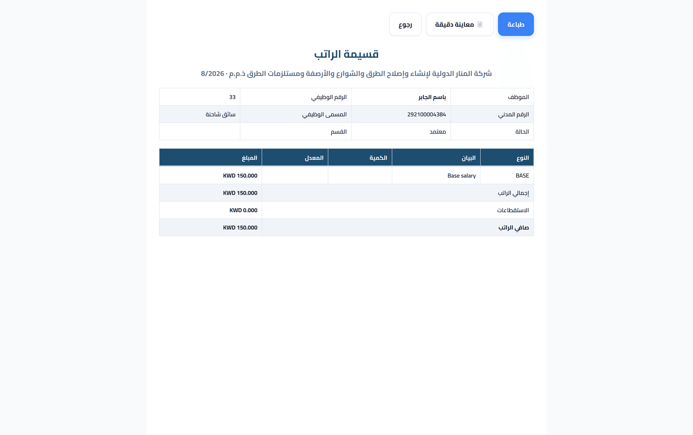
توليد ملف تحويل الرواتب بصيغة البنك لرفعه إلى النظام البنكي.
الخطواتيقرأ التصدير البنكي من مسير معتمد فقط. إن ظهرت لك رسالة «لا توجد رواتب معتمدة» فاعتمد المسير أولًا ثم أعِد المعاينة. وهذا الإجراء لا يعدّل أي بيانات — للعرض والتصدير فقط.
تبويب مستقل تمامًا عن ملف الرواتب، يخصّ وحدة «مستحقات الموظف الشهرية» (الفصل ٧):
حالات السطور: «جاهز» / «غير معتمد» / «لا يوجد كشف» / «لا يوجد مبلغ للتحويل» / «بيانات بنكية ناقصة».
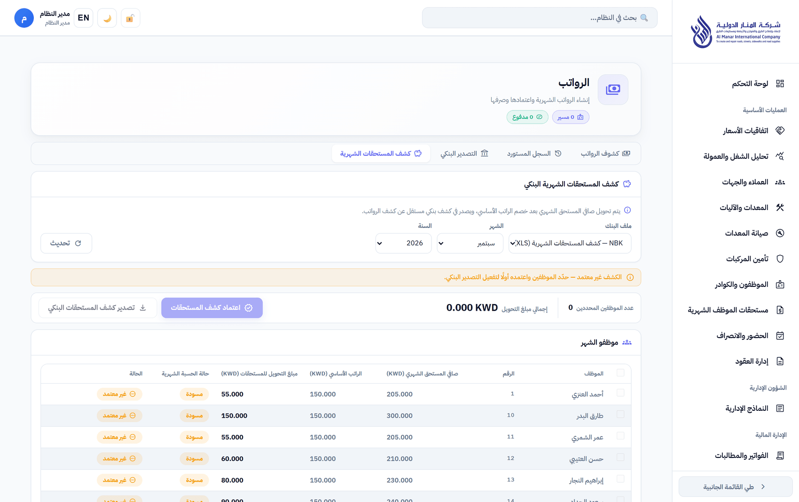
يعرض تحويلات الرواتب المستوردة من ملفات البنك: تاريخ الدفع، شهر المصدر، رقم التحويل، المستفيد، البنك، المبلغ، الرقم المدني، الحالة.
السجلات المستوردة تحمل شارة «للقراءة فقط» ولا تملك مربّع تحديد ولا أزرار سير عمل، وتفاصيل مكوّنات الراتب فيها تظهر كشرطة (—) لأنها غير متوفّرة في المصدر التاريخي.
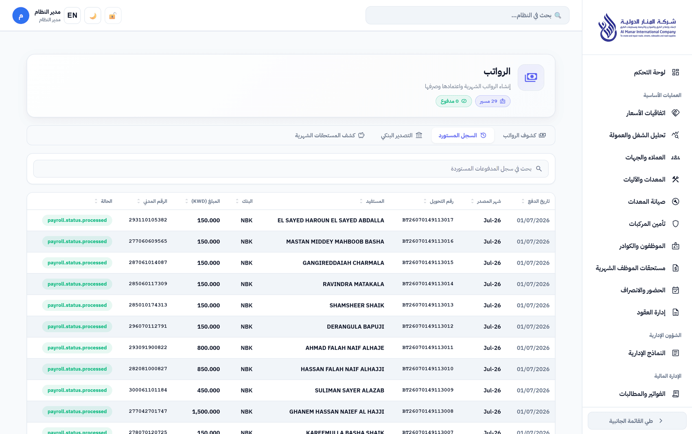
وحدة مستقلة لحساب العمل الإضافي والاستحقاقات والاستقطاعات شهريًا لكل موظف. المحاسب
أرقام هذه الوحدة لا تُرحَّل إلى الرواتب ولا إلى المحاسبة، ولها صلاحياتها الخاصة ومستنداتها الخاصة. تظهر هذه العبارة على الشاشة نفسها في أكثر من موضع — انتبه لها قبل أن تفترض أن رقمًا هنا يظهر في مكان آخر.
الوصول: الشريط الجانبي ← العمليات الأساسية ← مستحقات الموظف الشهرية /employee-compensation
الوحدة ثلاث مستويات متتابعة:
ويرافقها سجلّ جانبي مستقل: «المديونيات والسلف».
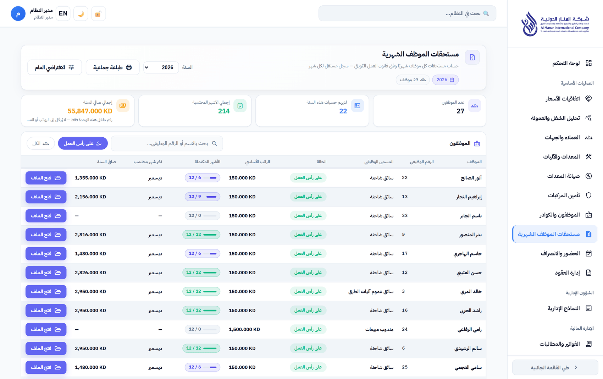
يعرض ١٢ بطاقة، واحدة لكل شهر. البطاقة الفارغة تعرض «لم يتم الإنشاء» وزرّ «إنشاء الحسبة»؛ والبطاقة المُنشأة تعرض حالتها («مسودة» أو «معتمد») ومبالغ العمل الإضافي والاستقطاعات وصافي المستحق وزرّ «فتح الحسبة».
أسفل الأشهر: قسم «المديونيات والسلف» وقسم «الملخّص السنوي».
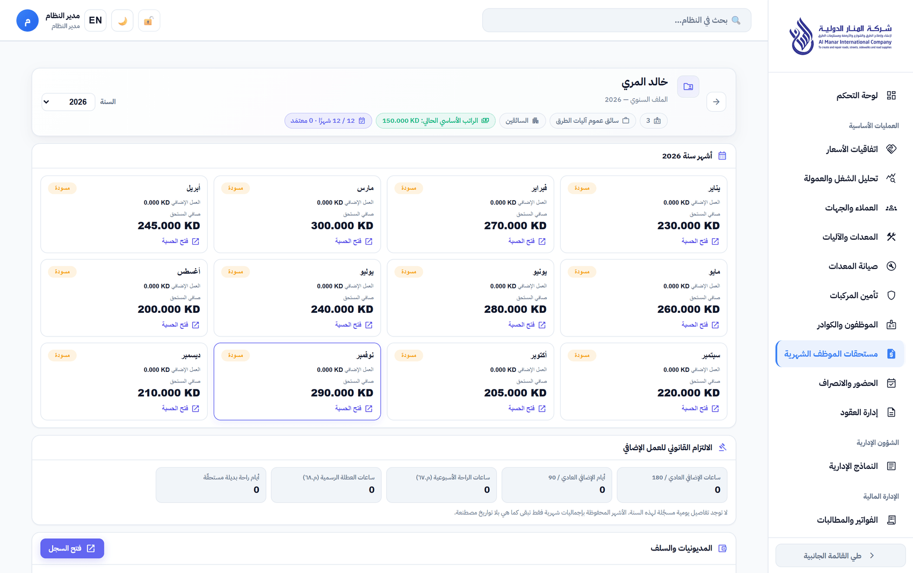
الراتب الأساسي + العمل الإضافي + الاستحقاقات الأخرى − الاستقطاعات = صافي المستحق
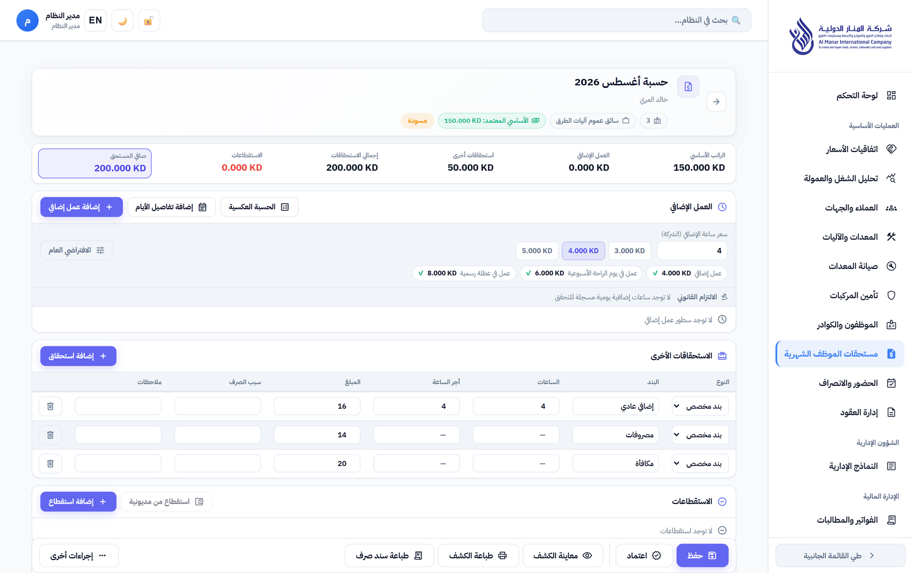
أدخل المبلغ المستهدَف، فيشتقّ النظام عدد ساعات العمل الإضافي المكافئة له، ويجبر أي كسر ساعة لمصلحة الموظف، ثم تضيفه كسطر بضغطة «إضافة كسطر».
خلافًا للرواتب، اعتماد حسبة الشهر في هذه الوحدة لا يمنع التعديل ولا الحذف؛ تظهر لك رسالة صريحة: «تم اعتماد حسبة الشهر — ويمكن تعديلها أو حذفها بعد الاعتماد». الاعتماد هنا وسم تنظيمي لا قفل. الاستثناء الوحيد هو اعتماد كشف المستحقات البنكي في صفحة الرواتب: هذا يُجمِّد المبالغ المصدَّرة.
الوصول: من الملف السنوي ← قسم «المديونيات والسلف» ← «فتح السجل»
دفتر مستقل لكل موظف، غير مرتبط بالسنة: مديونية سُجّلت عام ٢٠٢٦ تبقى ظاهرة في ٢٠٢٧ حتى تُسدَّد. الرصيد المتبقي مشتقّ دائمًا من حركات الدفتر، لا محفوظًا كرقم.
| الإجراء | الأثر |
|---|---|
| «إضافة سلفة / مديونية» | تسجيل المبلغ الأصلي وتاريخه وبيانه. |
| «تسجيل سداد يدوي» | حركة سداد مباشرة في الدفتر. |
| «استقطاع من مديونية» (من شاشة الشهر) | يُنشئ سطر استقطاع في الشهر وحركة في الدفتر معًا. تعديل المبلغ يحدّث الحركة نفسها، وحذف الحسبة يعكسها. |
سجل المديونيات هنا لا يُنشئ سلفة في نظام الرواتب، ولا قيدًا محاسبيًا، ولا مصروفًا. إن كنت تريد سلفة تخصم من كشف الراتب فسجّلها من «مدخلات ومعدّلات الرواتب» في وحدة الرواتب.
| المستند | محتواه |
|---|---|
| كشف مستحقات الموظف الشهرية | المستند الذي يوقّعه الموظف. لا يحتوي على أجر الساعة ولا المعاملات ولا بيانات الحسبة العكسية. |
| تفاصيل احتساب مستحقات موظف | المستند الداخلي التفصيلي بكل معطيات الاحتساب. |
| سند صرف نقدي | سند صرف المبلغ النقدي للشهر. |
الفصل مقصود: أجر الساعة والمعاملات وتفاصيل الحسبة العكسية يجب ألّا تظهر في المستند الذي يوقّعه الموظف، لذلك لا يمكن أن تتسرّب إليه.
الطباعة الجماعية: من قائمة الوحدة اضغط «طباعة جماعية»، اختر الموظف والسنة، فيطبع النظام كشوف السنة كلها بترتيب «كشف الشهر ثم سند صرفه». الأشهر غير المُنشأة تُتخطّى، ويحذّرك النظام من الأشهر التي لا يتوفر لها سند صرف قبل المتابعة.
إن لم يكن للشهر مبلغ نقدي مستحق، يكون زرّ «طباعة سند صرف» معطَّلًا برسالة «لا يوجد مبلغ نقدي مستحق للصرف لهذا الشهر». هذا سلوك سليم لا عطل.
خمسة عشر نموذجًا رسميًا جاهزًا للطباعة، من شهادة الراتب إلى سند القبض. كلاهما
الوصول: الشريط الجانبي ← الشؤون الإدارية ← النماذج الإدارية /forms
بطاقات النماذج المرتبطة بموظف تبقى معطَّلة حتى تختار موظفًا، ويظهر تنبيه «يجب اختيار موظف أولاً». قائمة الموظفين هنا تعرض الموظفين النشطين فقط.
| النموذج | التصنيف | يحتاج موظفًا؟ | الاستخدام |
|---|---|---|---|
| شهادة راتب | موارد بشرية | نعم | شهادة رسمية تُثبت راتب الموظف للجهات الطالبة. |
| إلى من يهمه الأمر | موارد بشرية | نعم | شهادة عمل عامة لتقديمها للجهات الخارجية. |
| طلب إجازة | موارد بشرية | نعم | طلب إجازة سنوية أو مرضية أو طارئة. |
| إشعار العودة إلى العمل | موارد بشرية | نعم | توثيق عودة الموظف بعد إجازة. |
| طلب سلفة راتب | موارد بشرية | نعم | طلب سلفة على الراتب. |
| طلب استقالة | موارد بشرية | نعم | نموذج استقالة موقّع. |
| إنذار موظف | موارد بشرية | نعم | إنذار رسمي موثَّق. |
| تقييم أداء الموظف | موارد بشرية | نعم | نموذج التقييم الدوري. |
| عقد عمل | موارد بشرية | اختياري | لموظف قائم، أو بإدخال يدوي لموظف جديد. |
| عرض سعر | عمليات | لا | عرض سعر للعميل. |
| طلب شراء | عمليات | لا | طلب شراء داخلي. |
| سند قبض | عمليات | لا | إثبات استلام مبلغ. |
| سند صرف | عمليات | لا | إثبات صرف مبلغ. |
| ورقة A4 فارغة | عمليات | لا | ورقة تحمل التوقيع والختم والباركود فقط. |
| محرر النماذج | عمليات | لا | محرر الخطابات الرسمية — الفصل ٩. |
عند فتحه بلا موظف محدَّد يعرض خيارَي «موظف موجود» و«موظف جديد (إدخال يدوي)». الإدخال اليدوي للطباعة فقط ولا يُنشئ سجل موظف في النظام. لتوظيف فعلي، أضف الموظف من وحدة «الموظفون» أولًا.
الوصول: النماذج الإدارية ← اختر الموظف ← بطاقة «طلب إجازة» ← «فتح»
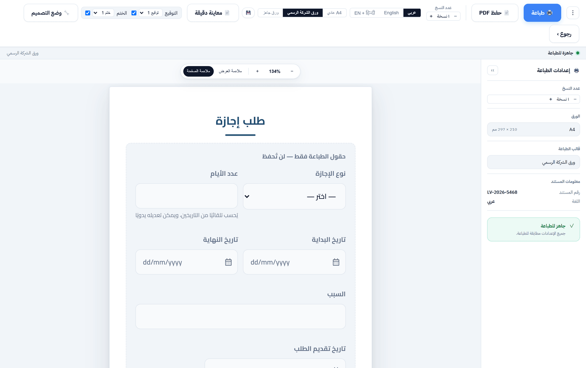
| الحقل | ملاحظات |
|---|---|
| نوع الإجازة | «سنوية» / «مرضية» / «بدون راتب» / «طارئة». تُطبع كـ«إجازة سنوية»… إلخ. |
| تاريخ البداية وتاريخ النهاية | يحدّدان عدد الأيام تلقائيًا. |
| عدد الأيام | يُحسب تلقائيًا من التاريخين شاملًا اليومين، ويمكن تعديله يدويًا. وبمجرد تعديله يدويًا يتوقّف الاحتساب التلقائي حتى تمسح أحد التاريخين. |
| السبب | نصّ حرّ. |
| تاريخ تقديم الطلب | يمكنك تحديده يدويًا. يبدأ بتاريخ اليوم، ويمكن تغييره لأي تاريخ — وهذا ما تحتاجه عند طباعة طلب بأثر رجعي لتاريخ تقديمه الفعلي. |
| تاريخ العودة المتوقع | يُطبع على المستند. |
تحمل لوحة الحقول عنوان صريحًا: «حقول الطباعة فقط — لن تُحفظ». ما تكتبه هنا يُطبع ولا يُنشئ سجل إجازة في النظام ولا يخصم من رصيد الإجازة.
أزرار المسوّدة الثلاثة («حفظ مسودة» / «استعادة المسودة» / «مسح المسودة») تحفظ في ذاكرة الجلسة فقط: تنجو من التنقّل بين الصفحات، وتضيع عند إغلاق البرنامج.
طلب الإجازة يقدّم ثلاث صيغ: «عربي» و«English» و«EN + हिन्दी» — الأخيرة مفيدة للعمالة الناطقة بالهندية.
معظم النماذج تُفتح داخل مساحة طباعة موحّدة، فيها الأدوات نفسها:
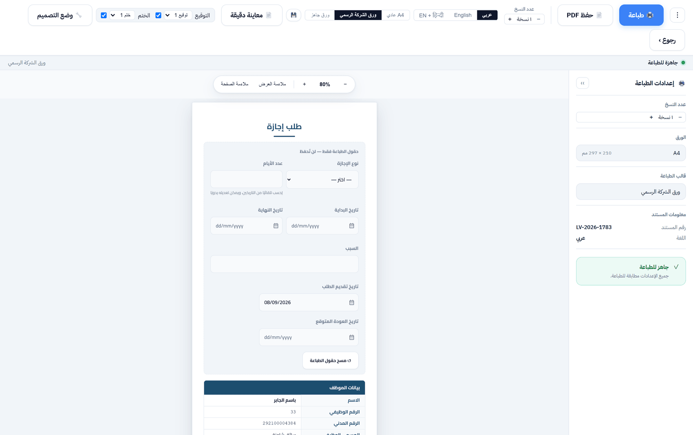
| الأداة | ماذا تفعل |
|---|---|
| «🖨️ طباعة» | يفتح نافذة الطباعة الفعلية. |
| «📄 حفظ PDF» | يحفظ المستند ملفًا PDF في المكان الذي تختاره. |
| «عدد النسخ» | من ١ إلى ١٠ نسخ، ويُحفظ اختيارك لكل نموذج على حدة. |
| «📄 معاينة دقيقة» | الأهم قبل الطباعة — تعرض الصفحات وفواصلها كما ستخرج من الطابعة تمامًا (الفصل ٢١). |
| مبدّل الورق | «A4 عادي» / «ورق الشركة الرسمي» / «ورق جاهز» (الفصل ٢١). |
| «رجوع ›» | العودة إلى مركز النماذج. |
| النسخة | من أين تُفتح | البيانات |
|---|---|---|
| سند صرف إداري | بطاقة «سند صرف» في النماذج الإدارية | تكتبها بنفسك يدويًا. |
| سند صرف شيك | زرّ «طباعة سند الصرف» في وحدة الشيكات | تُقرأ من الشيك ولا تُعدَّل، ورقم السند يصدره النظام. |
| الحقل | ملاحظات |
|---|---|
| رقم السند | يُقترح تلقائيًا بصيغة PV-YYYY-NNNN ويمكنك تعديله. |
| التاريخ | تاريخ اليوم افتراضيًا. |
| اسم المستفيد | «يُصرف إلى السيد / السادة…». |
| المبلغ ( د.ك ) | يُفرَّغ تلقائيًا إلى كلمات على المستند. |
| البيان / السبب | «وذلك عن…». |
| طريقة الدفع | «نقدًا» / «شيك» (الافتراضي) / «تحويل». |
| البنك ورقم الشيك | اختياريان. |
لا يمنعك النظام من طباعة سند ناقص. راجع المبلغ واسم المستفيد بعينك قبل الطباعة. كما أن هذا السند لا يُنشئ قيدًا محاسبيًا ولا يسجّل مصروفًا؛ إن كان المبلغ مصروفًا فعليًا فسجّله في وحدة «المصروفات والتشغيل».
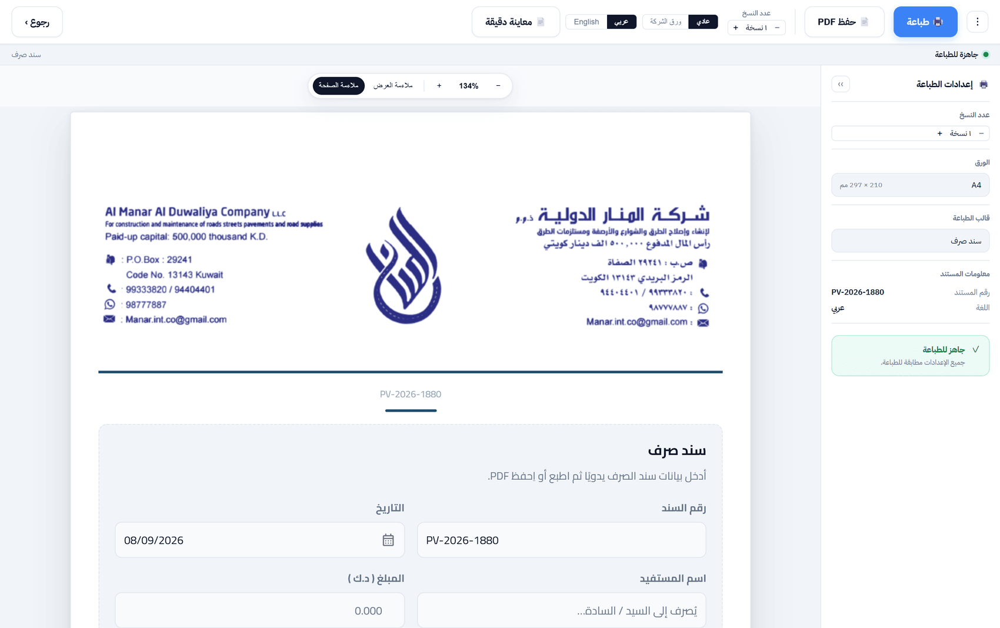
أعلى الصفحة زرّان تحت مسمّى «الورقة»:
| الخيار | ماذا يُطبع | الورق المستخدم |
|---|---|---|
| «عادي» (الافتراضي) | النموذج كامل بترويسة الشركة وتذييلها والباركود. | ورق أبيض عادي. |
| «ورق الشركة» | محتوى السند فقط — بلا ترويسة ولا تذييل، ويبدأ من ٤٥ مم من أعلى الصفحة ويترك ٢٠ مم من الأسفل. | ورق الشركة الرسمي المطبوع مسبقًا. |
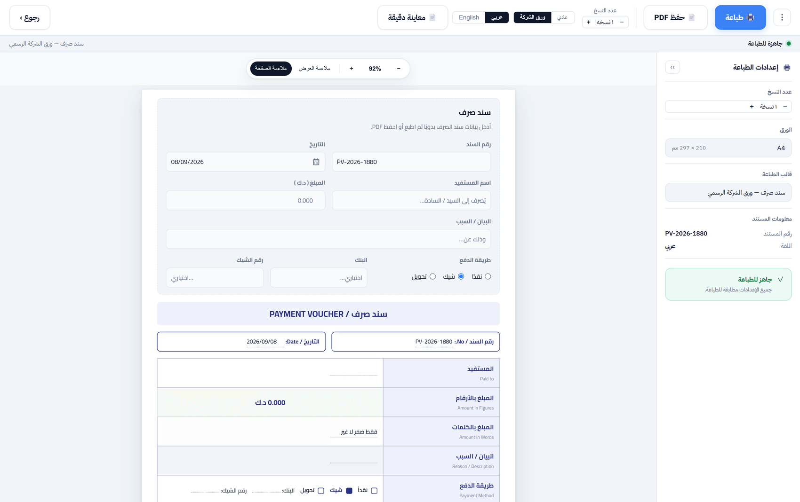
ورق الشركة الرسمي ← اختر «ورق الشركة». ورق أبيض ← اختر «عادي».
الخطأ الشائع هو طباعة الوضع «عادي» على ورق الشركة، فتظهر الترويسة مرتين:
واحدة مطبوعة على الورقة وأخرى طبعها النظام.
الوصول: النماذج الإدارية ← بطاقة «سند قبض» ← «فتح» /forms/receipt-voucher
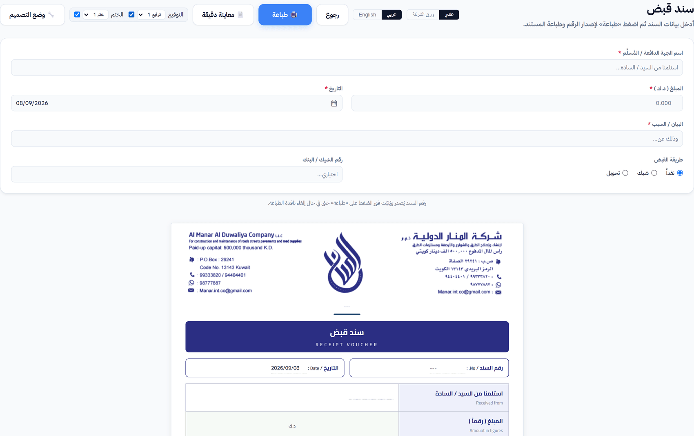
| الحقل | مطلوب | ملاحظات |
|---|---|---|
| اسم الجهة الدافعة / المُسلِّم | نعم | «استلمنا من السيد / السادة…». |
| المبلغ ( د.ك ) | نعم | يجب أن يكون أكبر من صفر، ويُفرَّغ إلى كلمات. |
| التاريخ | نعم | تاريخ اليوم افتراضيًا. |
| البيان / السبب | نعم | «وذلك عن…». |
| طريقة القبض | لا | «نقداً» (الافتراضي) / «شيك» / «تحويل». |
| رقم الشيك / البنك | لا | اختياري. |
خلافًا لسند الصرف الإداري، سند القبض يحجز رقمًا رسميًا بمجرد ضغط «طباعة» — حتى لو ألغيت نافذة الطباعة بعدها. الرقم يُستهلك ولا يعود. لذلك: أكمل الحقول وراجعها قبل الضغط على «طباعة»، ولا تضغطه للتجربة.
بعد الإصدار تظهر رسالة: «تم إصدار الرقم: {الرقم} — يمكنك الطباعة مجدداً بالضغط على «طباعة»»، وإعادة الطباعة بعدها تستخدم الرقم نفسه ولا تُصدر رقمًا جديدًا.
يحمل السند سطر توقيع واحدًا: «المُستلِم / Receiver»، وهو جزء من متن السند فيبقى مطبوعًا حتى في وضع «ورق الشركة». أمّا قسم اعتماد المدير والختم والباركود فهو جزء من تذييل الصفحة، ويختفي في وضع ورق الشركة.
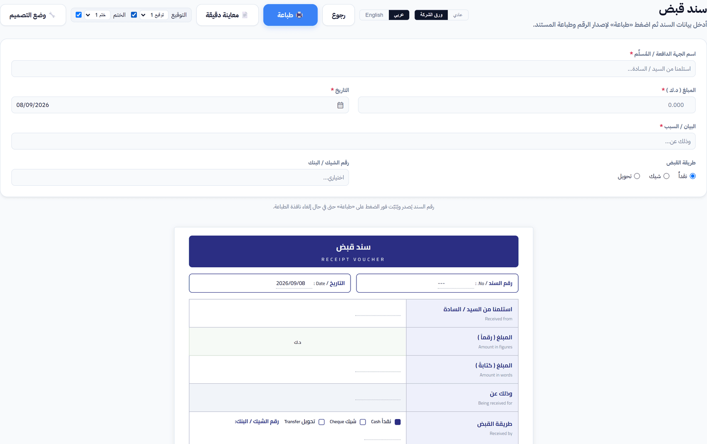
السندان يحملان مبدّل لغة: «عربي» و«English». وهو يغيّر: اتجاه الصفحة، ولغة تفقيط المبلغ، ولاحقة العملة (د.ك ↔ KWD)، وأزرار الواجهة.
عناوين حقول السند نفسها تبقى عربية وإنجليزية معًا في الحالتين (سند قبض / RECEIPT VOUCHER)، فالمبدّل لا يُلغي أحد اللغتين من المستند، بل يغيّر لغة المحتوى المتغيّر واتجاه الصفحة.
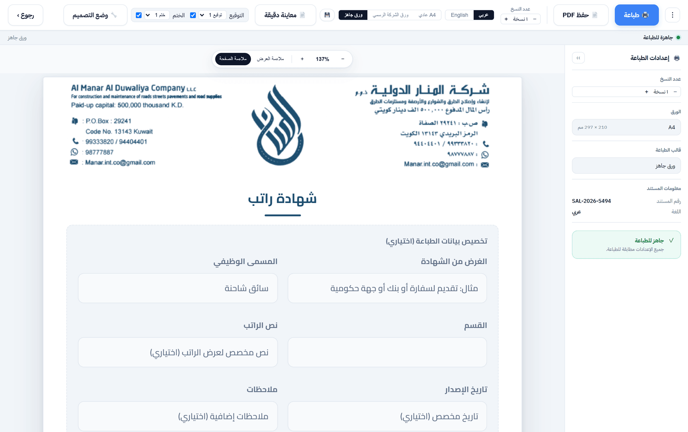
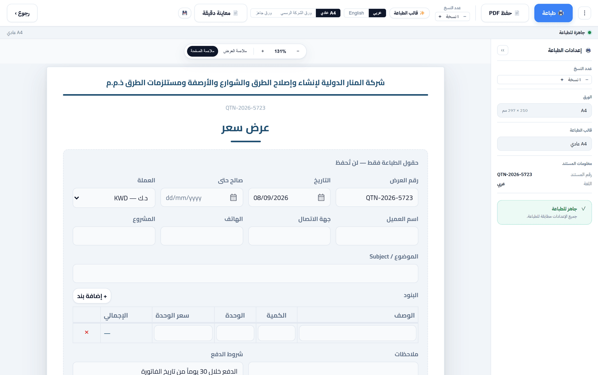
في أسفل مركز النماذج يظهر — بعد أول طباعة — قسم «سجل الطباعة لهذه الجلسة» مع حقل بحث «بحث باسم الموظف أو النموذج…». يفيدك في تتبّع ما طبعته اليوم.
إنشاء الخطابات الرسمية وتسجيلها برقم مرجعي دائم وأرشفتها. كلاهما
الوصول: النماذج الإدارية ← بطاقة «محرر النماذج» /forms/official-letter
المدخل الوحيد إلى محرر الخطابات هو بطاقته في مركز النماذج الإدارية.
مسودة مُسجّل مطبوع مُستبدَل ملغى
الأرشفة حالة مستقلة عن هذه الحالات: يمكن أرشفة خطاب في أي حالة.
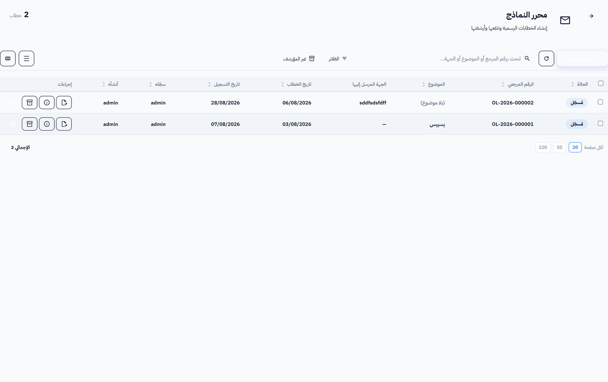
يحفظ المحرّر تلقائيًا، ويعرض حالته أعلى الشاشة: «جارٍ الحفظ…» / «محفوظ» / «تغييرات غير محفوظة» / «تعذّر الحفظ — التغييرات محفوظة محليًا». وإذا أُغلق البرنامج فجأة، يسألك عند فتح الخطاب: «تم العثور على تغييرات غير محفوظة من {التاريخ}. هل تريد استعادتها؟».
زرّ «تسجيل وإصدار رقم» يفعل أمرين معًا: يُصدر رقمًا مرجعيًا دائمًا، ويُجمّد محتوى المستند. يعرض النظام بعدها تنبيهًا صريحًا: «محتوى المستند مُجمَّد منذ التسجيل — أي تعديل بعده يجعل النسخة المحفوظة تخالف النسخة المسلَّمة».
لا تسجّل خطابًا قبل مراجعته نهائيًا. ولهذا الإجراء صلاحية مستقلة عن صلاحية التعديل.
من قائمة «تصدير» أربع وجهات:
الوجهات الأربع تمرّ بالفحص نفسه: خطاب لا يصلح للطباعة لا يصلح للتصدير بأي صيغة. إن كان الزرّ معطَّلًا فسبب ذلك تلميح مثل «لا يمكن التصدير: {عدد} خطأ مانع» — عالج الأخطاء من لوحة «نتائج التحقّق» أولًا.
توضيحًا لتجنّب توقّع غير قائم: هذا المحرّر لا يحتوي على سجل إصدارات للمستند (لا استعادة نسخة سابقة)، ولا تعليقات، ولا تتبّع تغييرات. قسم «الإصدارات» في لوحة خصائص المستند يعرض أرقام إصدارات القالب والتخطيط والباركود ونموذج المحتوى — وهي أرقام فنّية لتشخيص دقّة الطباعة، لا نسخًا من خطابك.
وسيلتا التراجع المتاحتان فعليًا هما: التراجع/الإعادة أثناء التحرير، واستعادة التغييرات غير المحفوظة عند إعادة الفتح.
إصدار الفواتير ومتابعة تحصيلها، وتسجيل المصروفات واعتمادها. المحاسب
الوصول: الشريط الجانبي ← الإدارة المالية ← الفواتير والمطالبات /invoices
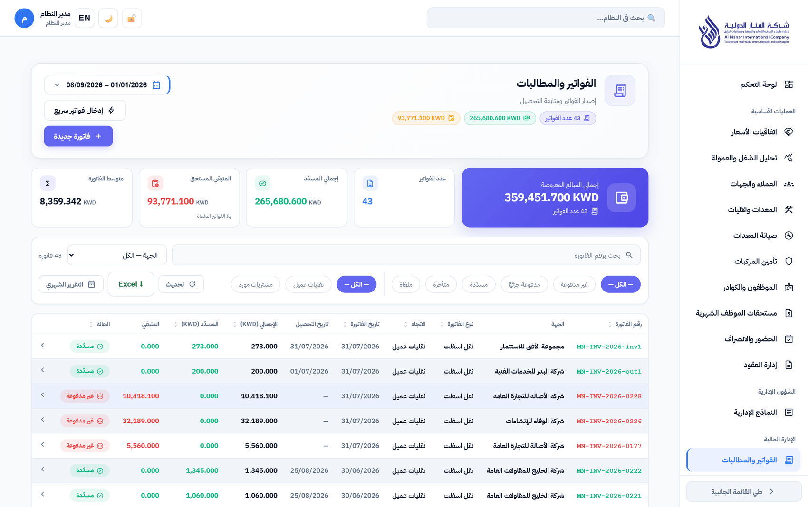
| الحالة | المعنى |
|---|---|
| غير مدفوعة | لم يُسجَّل عليها أي تحصيل. |
| مدفوعة جزئيًا | حُصِّل جزء من قيمتها ويبقى رصيد. |
| مسدَّدة | حُصِّلت بالكامل. |
| متأخرة | تجاوزت تاريخ استحقاقها دون سداد كامل. |
| ملغاة | ملغاة — لا تدخل في حساب المتبقي المستحق. |
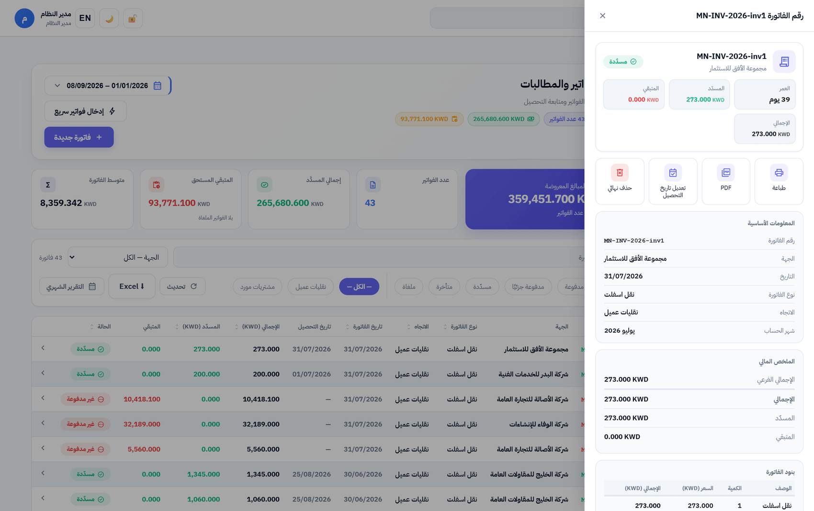
من لوحة التفاصيل يمكنك فتح معاينة الفاتورة وطباعتها أو حفظها PDF. ومن شريط الأدوات يُصدَّر الجدول الظاهر إلى Excel، كما يوفّر زرّ «التقرير الشهري» ملخّصًا شهريًا جاهزًا.
الوصول: الشريط الجانبي ← الإدارة المالية ← المصروفات والتشغيل /expenses
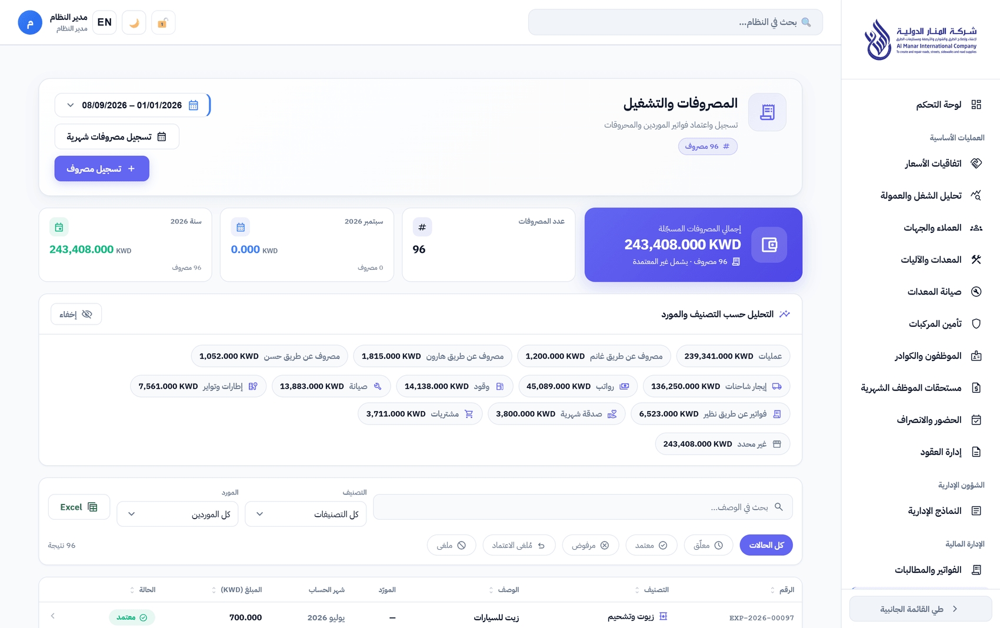
| الحالة | المعنى |
|---|---|
| معلّق | مسجَّل وينتظر الاعتماد. |
| معتمد | اعتُمد ويدخل في الحسابات. |
| مرفوض | رُفض ولا يُحتسب. |
| مُلغى الاعتماد | سُحب اعتماده بعد منحه. |
| ملغى | ملغى نهائيًا. |
بطاقة «إجمالي المصروفات المسجّلة» تحمل عبارة صريحة: «يشمل غير المعتمدة». إن أردت رقم المصروفات المعتمدة وحدها، فاستخدم شريحة «معتمد» أو تقرير المصروفات.
ولإدخال المصروفات الشهرية المتكرّرة دفعةً واحدة، استخدم زرّ «تسجيل مصروفات شهرية».
كما ذُكر في الفصل ٦: صرف الرواتب لا يُنشئ قيدًا تلقائيًا. سجِّل إجمالي رواتب الشهر كمصروف بتصنيف «رواتب» ليظهر في قائمة الأرباح والخسائر.
إصدار الشيكات وطباعتها على ورق البنك الأصلي، وإصدار سندات صرفها. المحاسب
الوصول: الشريط الجانبي ← الإدارة المالية ← إدارة الشيكات /cheques
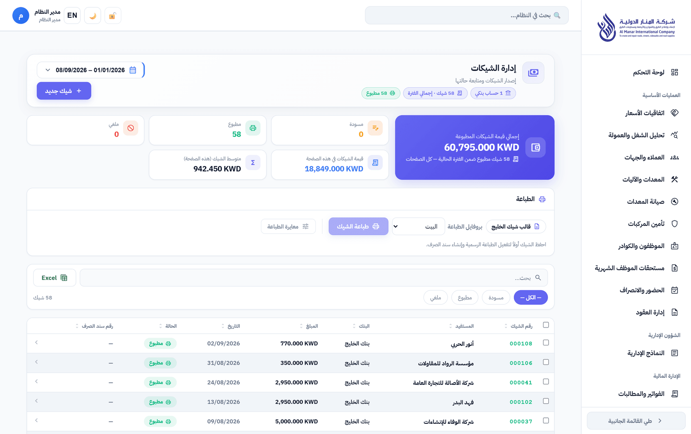
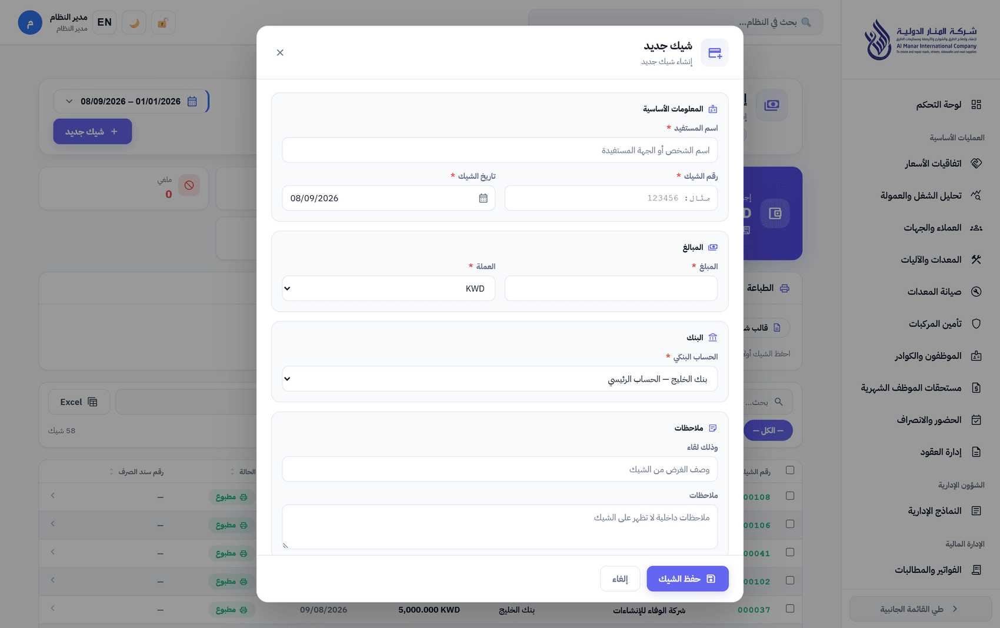
بمجرد كتابة المبلغ بالدينار الكويتي يعرض النظام «التفقيط» — المبلغ كتابةً — وهو حقل محسوب للعرض فقط لا يمكن تحريره. هذا يضمن تطابق الرقم مع الكلمات دائمًا.
اكتب الرقم المطبوع على ورقة الشيك التي بين يديك حرفيًا. النظام يرفض تكرار الرقم نفسه في الحساب البنكي نفسه، وهذا يحميك من ازدواج التسجيل.
إذا ظهرت رسالة «لا يوجد حساب بنكي نشط. أضف بنكًا وحسابًا من شاشة «البنوك والحسابات» أولًا»، فاذهب إلى وحدة البنوك (الفصل ١٣) وأنشئ البنك والحساب قبل تسجيل أي شيك.
| الحالة | المعنى | ما يمكن فعله |
|---|---|---|
| مسودة | مسجَّل ولم يُطبع بعد. | تعديل · طباعة · إلغاء. |
| مطبوع | طُبع فعليًا على ورق البنك. | تعديل · إعادة طباعة بتسجيل سبب · طباعة سند الصرف. |
| ملغي | ملغى. | لا شيء — حالة نهائية. لا تعديل ولا طباعة ولا سند صرف. |
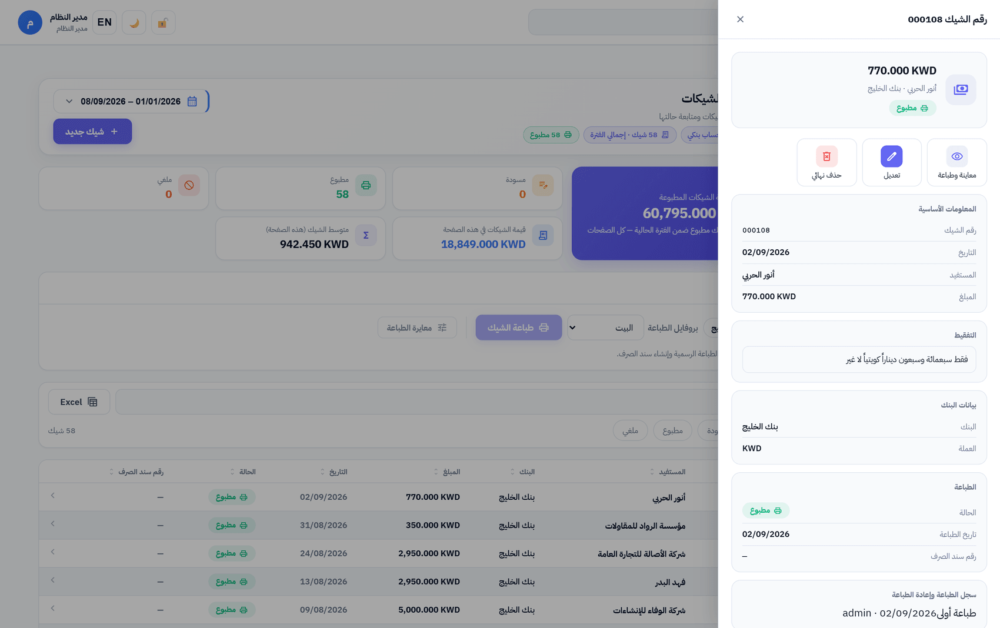
حدّد الشيك من الجدول، ثم استخدم قسم «الطباعة» أعلى الصفحة.
الخطواتصورة الشيك التي تراها خلف الحقول موجودة للمعاينة على الشاشة فقط، ولا يمكن أن تصل إلى ورقة الشيك الحقيقية. ما يُطبع هو الحقول وحدها.
إعادة طباعة شيك مطبوع مسموحة، لكنها تُسجَّل. يطلب النظام سببًا من قائمة: «انحشار الورق» / «مشكلة في الطابعة» / «ضبط المعايرة» / «عدم تطابق المحاذاة» / «طلب المستخدم» / «أخرى»، مع ملاحظة اختيارية.
في لوحة تفاصيل الشيك يعرض قسم «سجل الطباعة وإعادة الطباعة» كل عملية: «طباعة أولى» ثم «إعادة ١»، «إعادة ٢»… مع التاريخ واسم من طبع والسبب. وهو مرجعك عند السؤال عن عدد النسخ التي خرجت من شيك بعينه.
إذا ألغيت نافذة الطباعة أو فشلت، تظهر رسالة مثل «أُلغيت الطباعة قبل اكتمالها — لم يُسجَّل أي شيء». الحالة والسجل لا يتغيّران إلا بطباعة ناجحة مؤكَّدة.
حدّد عدة شيكات بمربّعات الاختيار فيظهر شريط «تم تحديد {عدد} شيك» مع «طباعة الشيكات المحددة» و«طباعة سندات الصرف المحددة».
بعد أن يصبح الشيك «مطبوع» يظهر زرّ «طباعة سند الصرف». النظام يُصدر رقم سند صرف رسميًا ويربطه بالشيك، ويظهر في الجدول في عمود «رقم سند الصرف».
ورأيت رسالة «لم يتم إصدار رقم سند الصرف بعد» فالسبب أنك لم تمرّ عبر وحدة الشيكات. ارجع إلى صفحة الشيكات واضغط «طباعة سند الصرف» على الشيك المطلوب.
ضبط مواضع الطباعة لتقع في خاناتها الصحيحة على ورقة الشيك الأصلية. المدير
ورقة الشيك مطبوعة مسبقًا بخانات محدَّدة: المستفيد، التاريخ، المبلغ رقمًا، المبلغ كتابةً. الطابعات تختلف بينها بمليمترات في سحب الورق. المعايرة تضبط هذه الفروق مرة واحدة لكل طابعة، فتقع الكلمات في خاناتها تمامًا في كل مرة.
الحبر في غير موضعه على شيك بنكي حقيقي يعني إتلاف ورقة شيك وربما رفض البنك لها. والمعايرة الصحيحة تُوفّر عليك ذلك.
صفحة «إدارة الشيكات» ← زرّ «معايرة الطباعة» (يتطلّب صلاحية تعديل الإعدادات).
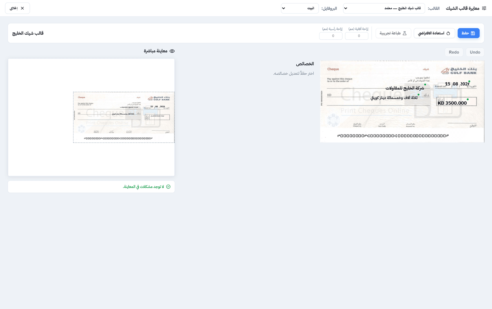
البروفايل يعني ببساطة: أيّ طابعة تستخدم؟ ثلاثة ثابتة لا تُضاف ولا تُحذف ولا تُعاد تسميتها:
| البروفايل | الاستخدام |
|---|---|
| «المكتب» | الطابعة الرئيسية في المكتب — وهو الافتراضي عند أول تشغيل. |
| «البيت» | طابعة ثانية في موقع آخر. |
| «أخرى» | أي طابعة ثالثة. |
معايرة «قالب شيك الخليج» على طابعة «المكتب» لا علاقة لها بمعايرته على «البيت»، ولا بمعايرة بنك آخر. النظام يحفظ إعدادات مستقلة لكل تركيبة، فيمكنك ضبط كل حالة مرة واحدة ثم التبديل بينها من قائمة «بروفايل الطباعة» في صفحة الشيكات.
لا يكتشف النظام الطابعة تلقائيًا. قبل كل طباعة شيك، تأكّد أن البروفايل المختار يطابق الطابعة التي ستطبع منها فعلًا. هذا أشيع سبب لطباعة مائلة عن الخانات.
| الحالة | المعنى | الطباعة الإنتاجية |
|---|---|---|
| معتمد | القالب طُوبق على شيك أصلي واعتُمد. | متاحة |
| إعداد افتراضي | القالب مسجَّل لكنه لم يُطابَق بعد مع الشيك الأصلي لهذا البنك. | موقوفة |
| غير معاير | لا توجد أبعاد ولا إحداثيات لهذا البنك. | موقوفة |
القوالب المسجَّلة في هذا الإصدار:
| القالب | الحالة | عمليًا |
|---|---|---|
| قالب شيك الخليج | معتمد | جاهز للطباعة الفعلية. |
| قالب شيك بيت التمويل الكويتي | إعداد افتراضي | يمكن فتحه ومعايرته وطباعته تجريبيًا، لكن الطباعة الفعلية موقوفة. |
| قالب شيك بنك الكويت الوطني | إعداد افتراضي | المثل. |
عند محاولة طباعة شيك لبنك بهذه الحالة تظهر رسالة صريحة: «قالب هذا البنك إعداد افتراضي ولم يُطابَق بعد مع الشيك الأصلي. عاير القالب على شيك البنك ثم اعتمده قبل الطباعة الإنتاجية.»
هذه حماية مقصودة لا عطل: النظام يرفض أن يطبع بأبعاد غير مؤكَّدة على شيك حقيقي، ولا يستعير أبعاد بنك آخر أبدًا. اعتماد القالب لبنك جديد يحتاج شيكًا أصليًا يُقاس عليه — وهو إجراء إعداد يتمّ بالتنسيق مع الجهة التي تدعم النظام.
تحمل الصفحة تنبيهًا: «طباعة تجريبية للقالب — لن تُسجَّل كطباعة شيك ولن تُغيّر حالة الشيك.» استخدمها بحرّية بقدر ما تحتاج.
تظهر هذه الشارة إذا عدّلت شيئًا ولم تحفظ. الطباعة التجريبية تستخدم تعديلاتك غير المحفوظة — وهذا مقصود لتجرّب قبل الالتزام — لكن الطباعة الفعلية تستخدم المحفوظ فقط. لا تنسَ «حفظ» بعد أن ترضى عن النتيجة.
إذا كانت شيكات المكتب تُطبع بمحاذاة سليمة، فلا تفتح المعايرة وتحرّك القيم «للتجربة». وإن اضطررت، دوّن القيم الحالية قبل تغييرها، أو استخدم «استعادة الافتراضي» للرجوع إلى إحداثيات المصنع (ولن تُحفظ حتى تضغط «حفظ»).
سجل البنوك، واستعراض كشوف الحساب المستوردة وتحليلها. المحاسب
الوصول: الشريط الجانبي ← الإدارة المالية ← البنوك والحسابات /banks
هذه الصفحة هي مصدر هوية البنك عند تسجيل الشيكات: بلا بنك وحساب هنا لا يمكن إنشاء شيك.
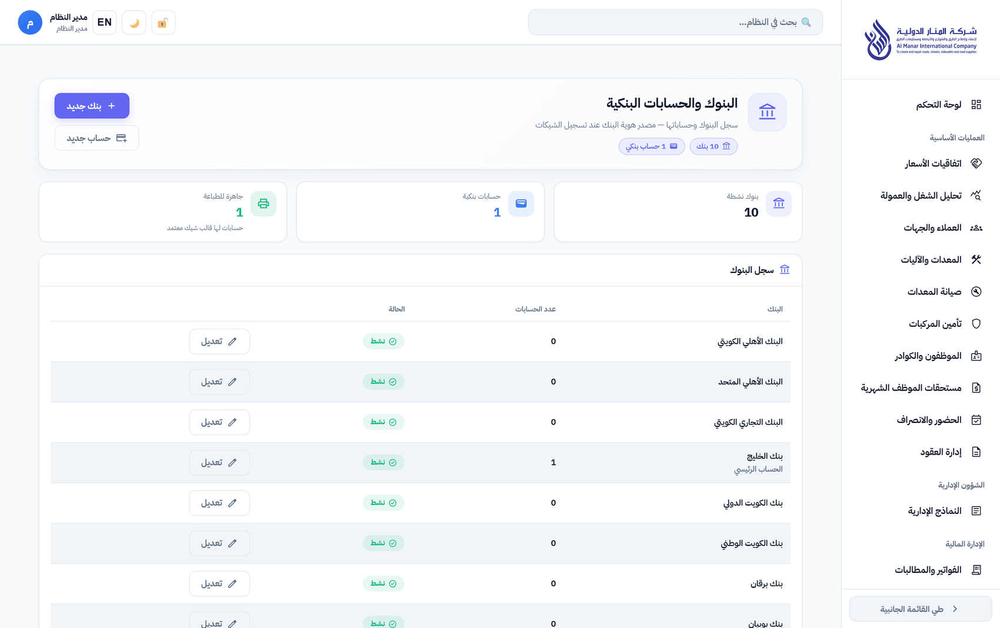
تعطيل بنك يمنع إصدار شيكات جديدة على حساباته فقط، ولا يؤثر على شيكاته السابقة.
يعرض «قالب معتمد» أو «القالب غير معد». هذه الشاشة لا تمنح حسابًا قالب طباعة — راجع الفصل ١٢ لفهم حالة القوالب.
الوصول: الشريط الجانبي ← البنوك ← مستعرض الحسابات /bank-accounts
بطاقة لكل حساب بنكي مبنيّة من كشوف الحساب المستوردة، وتعرض الرصيد الحالي والإيداعات والسحوبات وصافي التدفق وعدد المعاملات. اضغط البطاقة لفتح مستعرض الحساب.
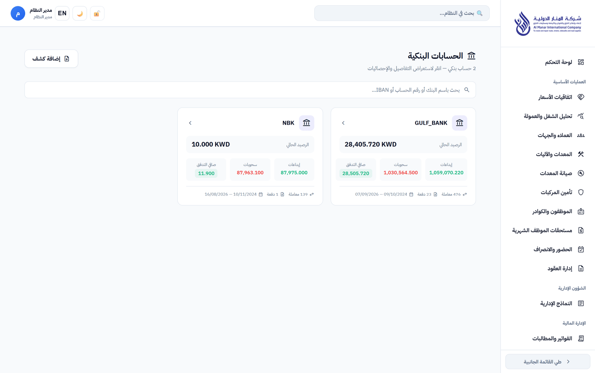
مستعرض الحساب أربعة تبويبات:
| التبويب | المحتوى |
|---|---|
| السجل الزمني | كل العمليات مع فلاتر: البحث، اتجاه الحركة، تصنيف المستند، نطاق التاريخ، الحد الأدنى والأعلى للمبلغ، واستبعاد التكرارات. |
| التحليلات | الرصيد التراكمي، التدفق الشهري، عدد العمليات شهريًا، أعلى الإيداعات والسحوبات، تفاصيل شهرية. |
| دفعات الاستيراد | ملفات الكشوف التي استوردتها. |
| تصدير | تصدير النتائج بعد التصفية إلى Excel أو CSV. |
زرّ التصدير يوضّح ذلك: «يشمل جميع النتائج بعد الفلترة ({عدد} حركة) — لا الصفحة الحالية». فلا داعي للتنقّل بين الصفحات قبل التصدير.
الوصول: الشريط الجانبي ← البنوك ← الحسابات البنكية /bank-reconciliation
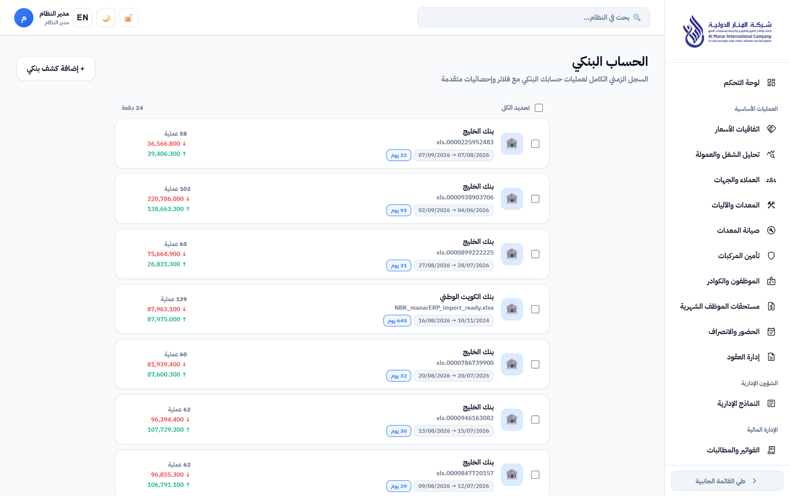
حذف دفعة يمحو كل عمليات ذلك الملف. راجع الدفعة جيدًا قبل الحذف، وخذ نسخة احتياطية إن كانت الدفعة كبيرة.
الوصول: الشريط الجانبي ← البنوك ← تحليلات الرواتب البنكية /payroll/bank-analytics
تحلّل تحويلات الرواتب المستوردة من البنك: ثماني بطاقات مؤشرات (إجمالي المبالغ المحوّلة، عدد التحويلات، الموظفون المدرجون، الأشهر المرصودة، متوسط الراتب، أعلى شهر، آخر استيراد، أشهر بزيادة)، وعشر شرائح تصفية سريعة، ولوحة فلاتر تفصيلية، ورسوم بيانية، وملخّص شهري.
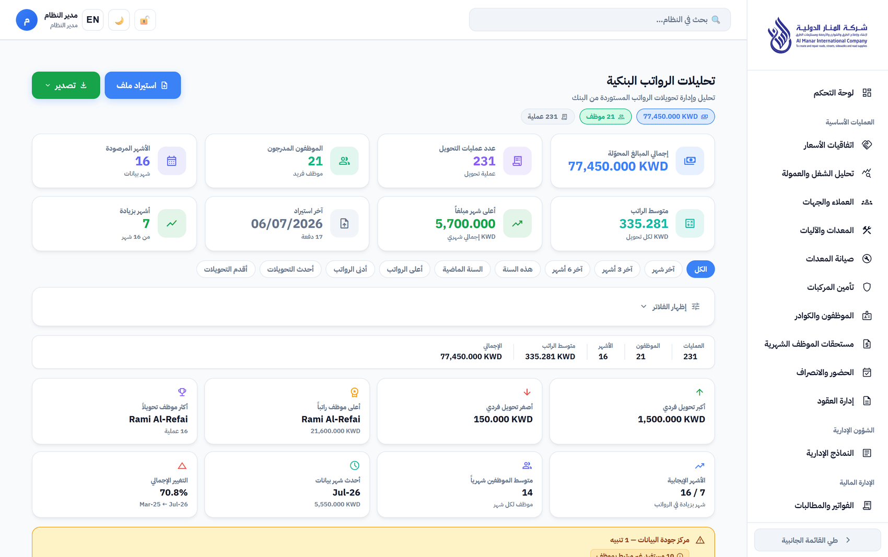
قارن ما حوّله البنك فعلًا (هذه الصفحة) بما اعتمدته في وحدة الرواتب (الفصل ٦). وقسم «مركز جودة البيانات» ينبّهك للسطور المشبوهة قبل أن تعتمد المطابقة.
إدخال البيانات دفعةً واحدة من ملفات Excel، واستيراد الكشوف البنكية. كلاهما
الوصول: الشريط الجانبي ← الأدوات ← استيراد البيانات /import
الصفحة وضعان رئيسيان:
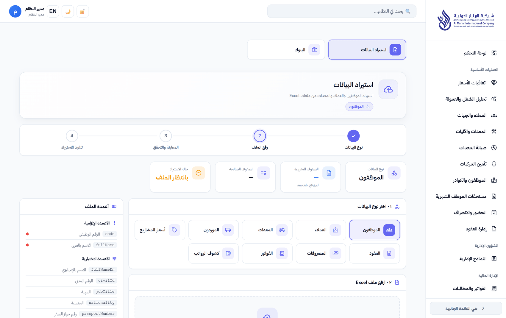
الموظفون العملاء المعدات الموردون أسعار المشاريع العقود المصروفات الفواتير كشوف الرواتب
| الحالة | المعنى |
|---|---|
| صالح | سيُستورد. |
| تحذير | سيُستورد مع ملاحظة تستحق المراجعة. |
| غير صالح | لن يُستورد — بيانات ناقصة أو خاطئة. |
| مكرر | موجود مسبقًا في النظام. |
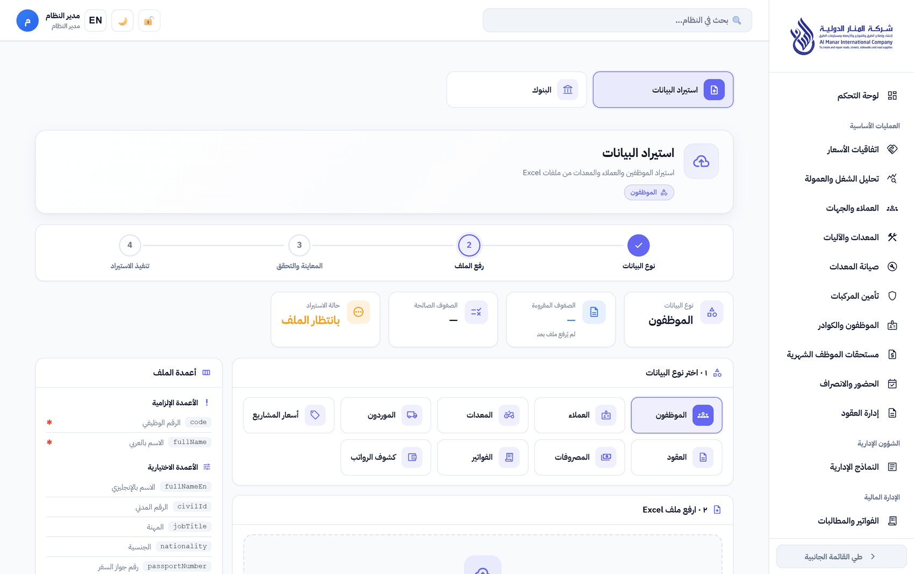
الاستيراد يكتب في قاعدة البيانات دفعةً واحدة، ولا يوجد زرّ «تراجع عن الاستيراد». خذ نسخة احتياطية (الفصل ٢٢) قبل استيراد ملف كبير، وابدأ دائمًا بملف تجريبي صغير من بضعة صفوف للتأكد من صحة المطابقة.
تكرار موظف أو عميل يُنتج سجلَّين للشخص نفسه، فتنقسم فواتيره ورواتبه بينهما. عالج المكرّرات في ملف Excel قبل التنفيذ.
أسطول الشركة: تسجيله وصيانته وتأمينه ومتابعة انتهاء وثائقه. كلاهما
الوصول: الشريط الجانبي ← العمليات الأساسية ← المعدات والآليات /equipment
المصدر الرسمي لبيانات المركبة وتاريخ انتهاء تسجيلها. ترتيب الجدول الافتراضي: الأقرب انتهاءً أولًا — عمليّ جدًا للمتابعة اليومية.
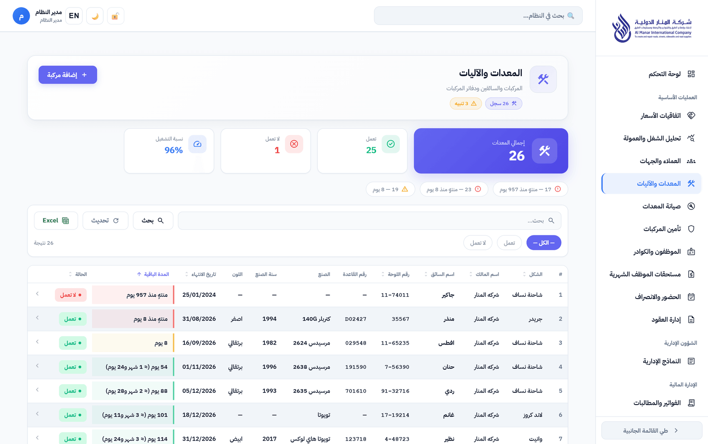
الأعمدة: # · الشكل · اسم المالك · اسم السائق · رقم اللوحة · رقم الشاسيه · الصانع · سنة الصنع · اللون · انتهاء التسجيل · المدة الباقية · الحالة.
النموذج ثلاثة أقسام: بيانات المعدة (رقم المعدة* · نوع المعدة* · الصانع · سنة الصنع · اللون · حالة المركبة) · الملكية (اسم المالك · اسم السائق) · التسجيل (رقم اللوحة · رقم الشاسيه · تاريخ انتهاء التسجيل).
الحالة: تعمل / لا تعمل
هذه الصفحة هي المصدر الوحيد لتاريخ انتهاء تسجيل المعدة في مركز انتهاء الوثائق. إن رأيت تاريخًا خاطئًا في المركز، فصحّحه من هنا.
الوصول: الشريط الجانبي ← العمليات الأساسية ← صيانة المعدات /maintenance
أربعة تبويبات: سجلات الصيانة · سجلات الوقود · الأعطال · قطع الغيار.
| العنصر | القيم |
|---|---|
| حالة سجل الصيانة | مجدولة قيد التنفيذ مكتملة ملغاة |
| نوع الصيانة | «وقائية» / «تصحيحية» |
| حالة العطل | مفتوح / محلول |
| شدّة العطل | «منخفضة» / «متوسطة» / «عالية» |
حقول سجل الصيانة: المعدة · نوع الصيانة · الحالة · الوصف (مطلوب) · المبلغ (د.ك) · نُفِّذ بواسطة · التاريخ · تاريخ الصيانة القادمة.
إن ملأت حقل «تاريخ الصيانة القادمة»، تعرض بطاقة «صيانة مستحقة قريبًا» ما يستحق خلال ٣٠ يومًا. عادة بسيطة تمنع تراكم الأعطال.
مركز انتهاء الوثائق يتابع ست فئات فقط (الفصل ١٦)، والصيانة ليست منها. تابع الصيانة من هذه الصفحة ومن بطاقاتها.
الوصول: الشريط الجانبي ← العمليات الأساسية ← تأمين المركبات /vehicle-insurance
تبويبان: وثائق التأمين وسجل الحوادث.
بيانات الوثيقة: «رقم وثيقة التأمين»* · «شركة التأمين»* · «نوع التأمين»* («شامل» / «ضد الغير» / «آخر»). المدة والتكلفة: «تاريخ بداية التأمين»* · «تاريخ انتهاء التأمين»* · «تكلفة التأمين (د.ك)» · «ملاحظات».
| الحالة | القاعدة |
|---|---|
| ساري | تاريخ الانتهاء لم يحن بعد وليس قريبًا. |
| ينتهي قريبًا | يقترب تاريخ الانتهاء. |
| منتهي | تجاوز تاريخ الانتهاء. |
وتُلوَّن الصفوف بتدرّج أدقّ: منتهية · تنتهي خلال ٧ أيام · خلال ١٥ يومًا · خلال ٣٠ يومًا · سارية.
عند تجديد التأمين اضغط «تجديد التأمين»: يُنشئ النظام وثيقة جديدة وتبقى القديمة في «سجل وثائق التأمين» كأرشيف.
أمّا «تصحيح بيانات الوثيقة» فهو للأخطاء الإملائية في وثيقة قائمة فقط. لا تستخدمه للتجديد — فتعديل تاريخ انتهاء الوثيقة القديمة يمحو تاريخ التغطية ويجعل الأرشيف غير صحيح.
وثائق التأمين والحوادث لا تُحذف: التجديد يُنشئ سجلًا جديدًا، والحادث سجل تاريخي دائم.
التصدير: زرّ «تصدير Excel». ولتقرير أشمل مع PDF وطباعة، استخدم «تقرير تأمين المركبات» في مركز التقارير (الفصل ٢٠).
شاشة واحدة تجمع كل ما سينتهي: إقامات وجوازات ورخص وتسجيل معدات وتأمين وعقود. كلاهما
الوصول: الشريط الجانبي ← النظام ← مركز انتهاء الوثائق /expirations
| نوع الوثيقة | المصدر الرسمي (حيث تُعدَّل) |
|---|---|
| إقامة موظف | الموظفون والكوادر |
| جواز سفر موظف | الموظفون والكوادر |
| رخصة قيادة موظف | الموظفون والكوادر |
| تسجيل معدة | المعدات والآليات |
| تأمين معدة | تأمين المركبات |
| انتهاء عقد | إدارة العقود |
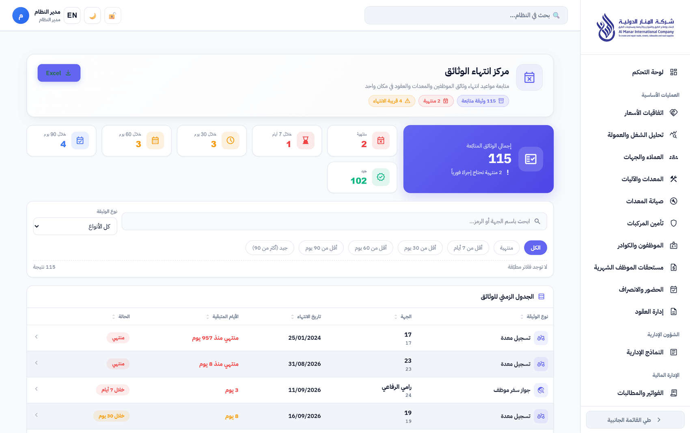
| الحالة | شريحة التصفية | القاعدة |
|---|---|---|
| منتهي | «منتهية» | تجاوز تاريخ الانتهاء. |
| خلال 7 أيام | «أقل من 7 أيام» | من ٠ إلى ٧ أيام. |
| خلال 30 يوم | «أقل من 30 يوم» | من ٨ إلى ٣٠ يومًا. |
| خلال 60 يوم | «أقل من 60 يوم» | من ٣١ إلى ٦٠ يومًا. |
| خلال 90 يوم | «أقل من 90 يوم» | من ٦١ إلى ٩٠ يومًا. |
| جيد | «جيد (أكثر من 90)» | أكثر من ٩٠ يومًا. |
أعمدة الجدول: نوع الوثيقة · الجهة · تاريخ الانتهاء · الأيام المتبقية · الحالة — كلها قابلة للترتيب، وعمود «الحالة» يُرتَّب حسب الإلحاح لا حسب الأبجدية.
الفلاتر: بحث بالاسم أو الرمز · «نوع الوثيقة» · شرائح الإلحاح الستّ · «إعادة تعيين». التصدير: Excel يحترم التصفية الحالية.
عدّل التاريخ من السجل الأصلي، وسيظهر التحديث في المركز فورًا.
لا يوجد في هذه الشاشة زرّ إضافة ولا تعديل ولا حذف. وهذا مقصود: لو أمكن تعديل التاريخ في مكانين لاختلف المكانان يومًا ما، ولما عرفت أيّهما الصحيح.
لوحة التفاصيل تعرض اسم الشاشة المالكة كنصّ لا كرابط. تنتقل إليها بنفسك من الشريط الجانبي. الإجراءان السريعان المتاحان في اللوحة هما «تصفية حسب هذا النوع» و«تصدير النتائج الحالية».
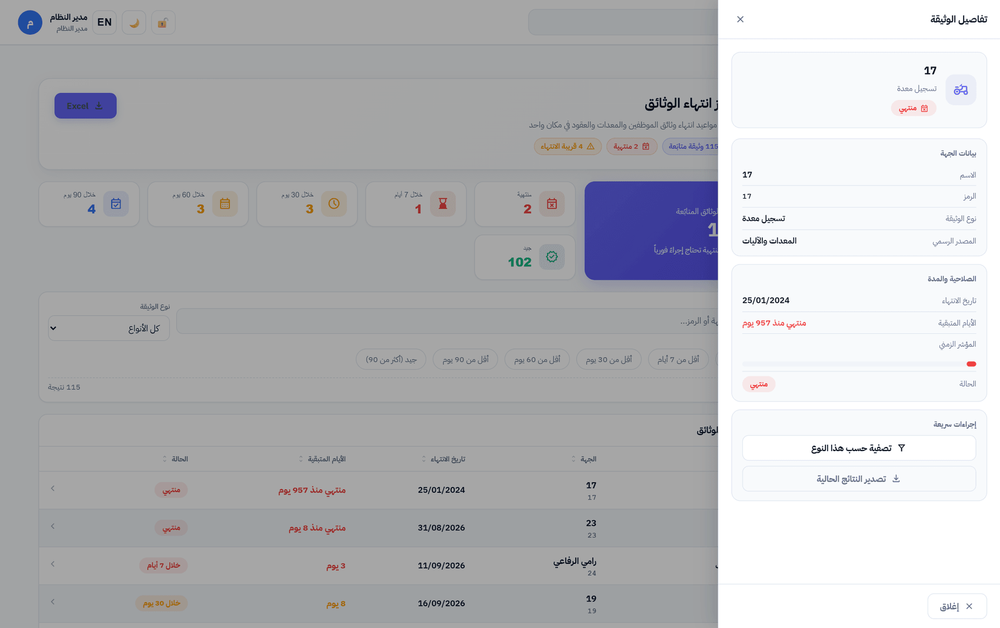
إذا لم تجد موظفًا أو معدة في المركز، فالسبب غالبًا أن حقل التاريخ فارغ في سجله. النظام لا يخترع تاريخًا. أكمل الحقل في المصدر ليدخل السجل في المتابعة. كذلك يستبعد المركز الموظفين منتهي الخدمة، ويقتصر على العقود النشطة أو قيد التجديد.
دليل الحسابات والقيود، وكشوف الحساب وأعمار الذمم وميزان المراجعة. المحاسب
الوصول: الشريط الجانبي ← الإدارة المالية ← القيود المحاسبية /accounting
تجمع الحسابات وقيود اليومية والمدفوعات في شاشة واحدة.
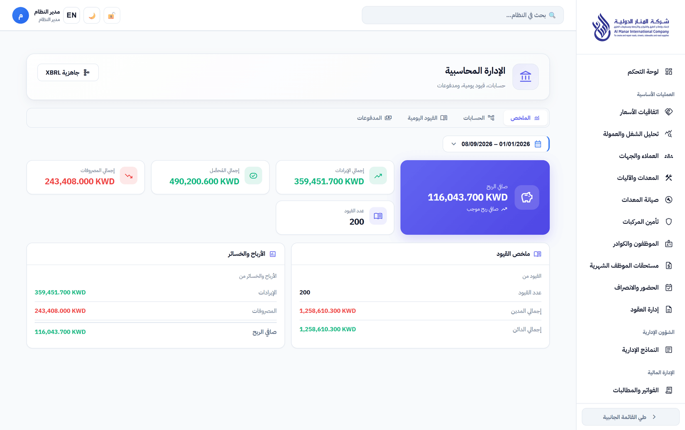
تصحيح قيد خاطئ يتمّ بـعكسه لا بحذفه: يُنشئ النظام قيدًا مضادًا يبقى الاثنان ظاهرين في الدفتر. هذا هو السلوك المحاسبي الصحيح، وله صلاحية مستقلة.
الوصول: الشريط الجانبي ← الإدارة المالية ← المركز المالي /financial
ستة تبويبات، يظهر كلٌّ منها بحسب صلاحيتك:
| التبويب | المحتوى |
|---|---|
| كشف الحساب | كشف لعميل أو مورّد: رصيد أول المدة · إجمالي مدين · إجمالي دائن · رصيد الإقفال. مع عرض «مسطّح» أو «مجمّع» وخيار «إخفاء المسدد». |
| أعمار الذمم | الذمم المدينة والدائنة موزَّعة على فئات: «جاري» · «0–30 يوم» · «31–60» · «61–90» · «91–120» · «+120 يوم». |
| دفتر الأستاذ | حركة حساب بعينه خلال فترة. |
| ميزان المراجعة | حتى تاريخ محدَّد: رصيد الافتتاح · مدين الفترة · دائن الفترة · رصيد الإقفال. |
| دفتر اليومية | كل القيود مع فلاتر التاريخ والحالة والبحث، و«فتح الكل» / «إغلاق الكل». |
| التقارير المالية | روابط إلى التقارير الجاهزة. |
كل التبويبات تدعم تصدير Excel وPDF.
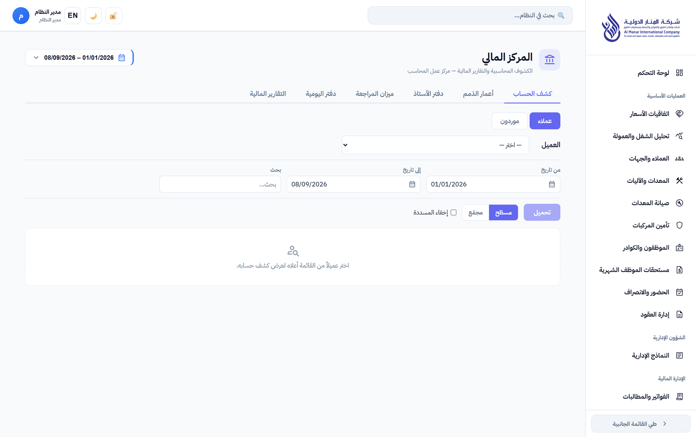
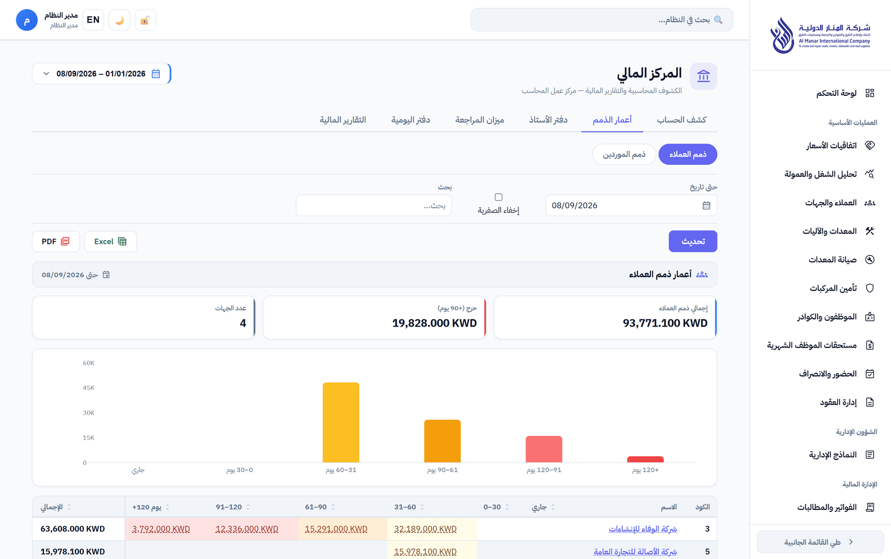
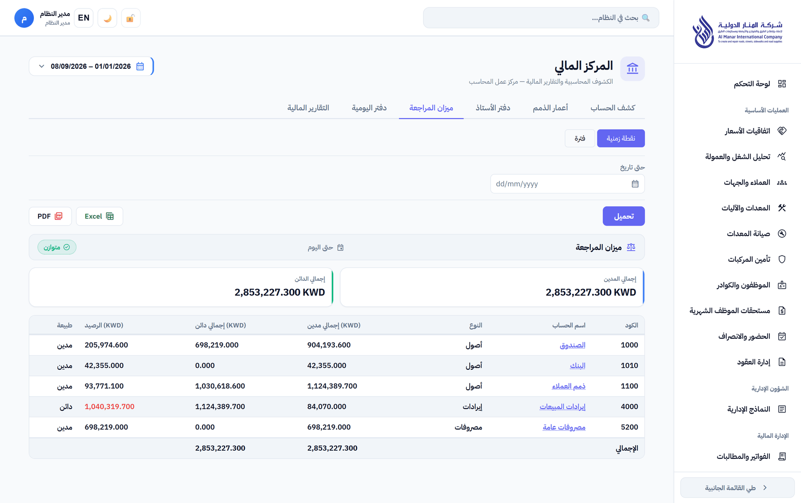
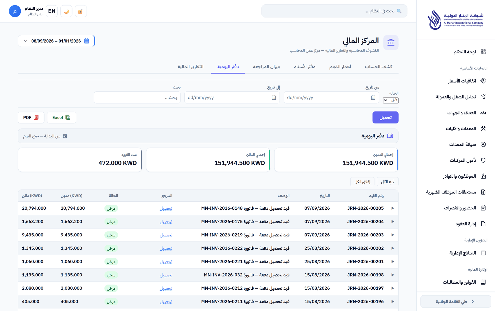
إن ظهر تنبيه «ميزان المراجعة غير متوازن» فهناك خلل في القيود يجب معالجته قبل الاعتماد على أي تقرير مالي. لا تتجاهله ولا تصدّر تقريرًا فوقه.
يوفّر المركز المالي إمكانية قفل فترة مالية لمنع أي تعديل على بياناتها بعد إقفالها.
القفل يمنع التعديل العَرَضي على شهر أُغلقت حساباته. وتجاوز القفل يحتاج صلاحية «تجاوز قفل الفترة المالية» غير الممنوحة لأي دور افتراضيًا، وكل استخدام لها مسجَّل في سجل التدقيق.
في تبويب «التقارير المالية» ستجد بنودًا معلَّمة صراحةً بـ«قريباً»: «الميزانية العمومية» و«التدفقات النقدية» و«مقارنة الميزانية». هذه غير متاحة في هذا الإصدار — لا تخطّط عليها.
الجهات التي تتعامل معها، واتفاقياتها، وحساب العمولة قبل الفوترة. كلاهما
الوصول: الشريط الجانبي ← العمليات الأساسية ← العملاء والجهات /customers
سجل الجهات الحكومية وشركات القطاع الخاص. النموذج ثلاثة أقسام: الهوية · الاتصال · ملاحظات. ونوع العميل: «حكومي» أو «خاص».
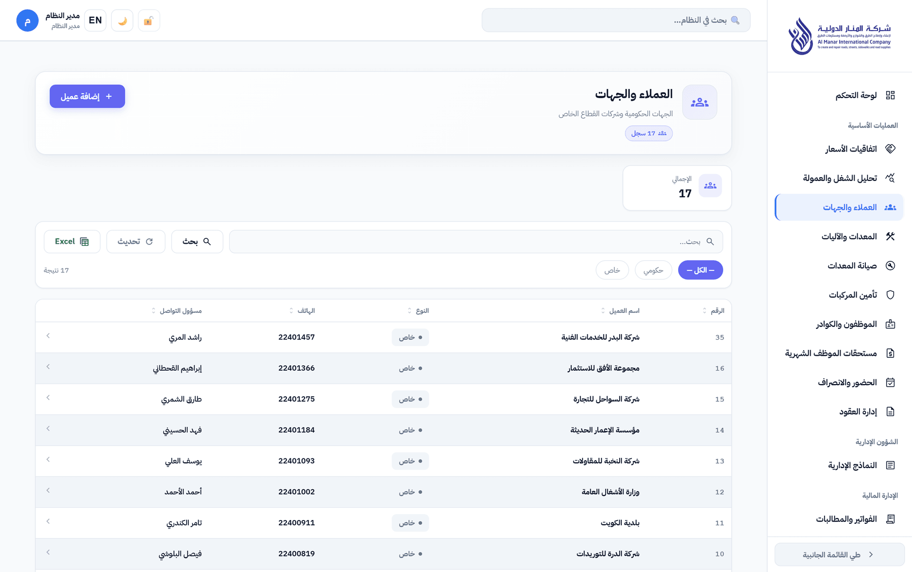
وحدة العملاء تدعم الأرشفة. عميل لم تعد تتعامل معه: أرشفه بدل حذفه، فتبقى فواتيره وكشوفه سليمة ويختفي من قوائم الاختيار.
الوصول: الشريط الجانبي ← العمليات الأساسية ← إدارة العقود /contracts
عقود نقل الأسفلت الشهرية مع مصانع الأسفلت. النموذج ثلاثة أقسام: البيانات الأساسية · التسعير · المدة.
الحالات: نشط قيد التجديد موقوف منتهٍ
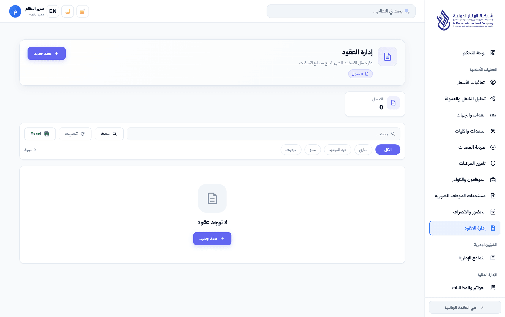
العقود النشطة أو قيد التجديد التي لها تاريخ نهاية تظهر في مركز انتهاء الوثائق. اضبط الحالة والتاريخ بدقّة لتصلك التنبيهات في وقتها.
الوصول: الشريط الجانبي ← العمليات الأساسية ← اتفاقيات الأسعار /prices
أسعار المشاريع المتفق عليها مع العملاء. تُستخدم مرجعًا عند إصدار الفواتير وفي «تحليل الشغل والعمولة» و«تقرير استخدام الاتفاقيات».
الوصول: الشريط الجانبي ← العمليات الأساسية ← تحليل الشغل والعمولة /work-analysis
أداة تحسب العمولة والهامش قبل إصدار الفاتورة: تقارن سعر العميل بسعر صاحب المعدة لكل بند وتستخرج العمولة والهامش.
تحمل الصفحة هذه الشارة بشكل دائم، ووصفها يقول: «تحليل داخلي لا أثر محاسبي له». وحالة «مكتمل» هنا تعني «انتهيتُ منه»، لا «معتمد محاسبيًا». لتحقيق الإيراد فعليًا يجب إصدار فاتورة في وحدة الفواتير.
الحالات: مسودة مكتمل مؤرشف. التصدير: طباعة · Excel · PDF — ويجب حفظ التحليل أولًا: «احفظ التحليل قبل التصدير».
الوصول: الشريط الجانبي ← الإدارة المالية ← الموردون /suppliers
سجل الموردين — يُربط بفواتير المشتريات والمصروفات، ويدعم الأرشفة والتصدير إلى Excel.
إدارة المواد وحركة المخزون. كلاهما
الوصول: الشريط الجانبي ← المستودع ← المخزون والمشتريات /inventory
تغطّي المواد وأوامر الشراء واستلام البضاعة وصرف المواد. وحدات القياس المتاحة: طن كيلو لتر قطعة متر كيس برميل صندوق
| المستند | الحالات |
|---|---|
| أمر الشراء | مسودة مُرسَل مُستلَم ملغى |
| استلام البضاعة | مسودة مُرحَّل |
| صرف المواد | مسودة مُرحَّل ملغى |
المستند في حالة «مسودة» لا يغيّر الأرصدة. الرصيد لا يتحرّك إلا عند الترحيل. إن كان رصيد مادة لا يتطابق مع الواقع، فابحث أولًا عن مستندات بقيت مسوّدة ولم تُرحَّل.
في هذا الإصدار لا تُنشئ حركة المخزون قيودًا في دفتر اليومية تلقائيًا. تكلفة المشتريات تُسجَّل من وحدة «المصروفات والتشغيل» أو من فواتير المشتريات.
ثمانية عشر تقريرًا جاهزًا وأربعة مراكز تحليلية. كلاهما
الوصول: الشريط الجانبي ← النظام ← التقارير الشاملة /reports
| التقرير | المجموعة | الفلاتر |
|---|---|---|
| تقرير الفواتير | المالية | التاريخ · العميل · الاتجاه · الحالة |
| تقرير المصروفات | المالية | التاريخ · الحالة |
| تقرير الشيكات | المالية | التاريخ · الحالة |
| الأرباح والخسائر | المالية | التاريخ |
| تقرير العقود | الأعمال | العميل · الحالة |
| تقرير العملاء | الأعمال | نوع العميل |
| تقرير الموظفين | الموارد البشرية | الحالة |
| تقرير الرواتب | الموارد البشرية | التاريخ · الموظف · الحالة |
| تقرير مستحقات الموظفين الشهرية | الموارد البشرية | السنة · الشهر · الموظف · القسم · حالة الكشف |
| تقرير الحضور | الموارد البشرية | التاريخ · الموظف · الحالة |
| تقرير المعدّات | العمليات | الحالة |
| تقرير تأمين المركبات | العمليات | حالة التأمين |
| تقرير المصروفات حسب الشركة | التشغيلية | التاريخ · الشهر · السنة · الشركة · الحالة |
| تقرير استخدام الاتفاقيات | التشغيلية | العميل · الشركة · نوع العمل |
| كشف حساب عميل | المستحقات | العميل · التاريخ |
| أعمار الديون | المستحقات | التاريخ · العميل |
| أرصدة العملاء | المستحقات | العميل · التاريخ |
| ملخص التحصيلات | المستحقات | التاريخ · العميل |
| شارة البطاقة | معناها |
|---|---|
| جاهز | يعمل بالإعدادات الحالية مباشرة. |
| يحتاج فلاتر | يلزمه ضبط فلاتر قبل التشغيل. |
| تقرير مباشر | يعرض النتيجة فورًا. |
إن شغّلت «الأرباح والخسائر» دون تحديد فترة يحذّرك النظام: «قائمة الدخل ستشمل كل السنوات — اختر فترة محددة». لا ترفع رقمًا للإدارة قبل تحديد الفترة.
اضغط النجمة على بطاقة أي تقرير لإضافته إلى «المفضلة»، وسيبقى محفوظًا لك. وشريط «الأخيرة:» يعيدك بسرعة إلى آخر ما شغّلته.
زرّ «تصدير PDF» يظهر داخل تطبيق سطح المكتب. أمّا تصدير Excel فمتاح دائمًا.
الوصول: الشريط الجانبي ← النظام ← مركز القرار التنفيذي /executive المدير
ستة تبويبات:
| التبويب | المحتوى |
|---|---|
| الملخص المالي | إجمالي الإيرادات والمصروفات وصافي الربح والتحصيلات والذمم وهامش الربح ونسبة التحصيل والعقود النشطة، مع المقارنة الشهرية وكبار المدينين وأعلى العقود ربحًا. |
| بطاقات القرار | بطاقات موجزة لقرارات تحتاج انتباهك. |
| التنبيهات | ما يستدعي إجراءً. |
| المؤشرات الزمنية | تطوّر المؤشرات عبر الزمن. |
| صحة الشركة | مؤشر صحّي مركّب. |
| التوصيات | اقتراحات مبنيّة على البيانات. |
تحمل تبويبات «التنبيهات» و«المؤشرات الزمنية» و«صحة الشركة» و«التوصيات» شارة «حالة حالية · لا تتبع الفترة المختارة»: هي تعرض الوضع الآن بغضّ النظر عن محدِّد الفترة أعلى الصفحة. تبويب «الملخص المالي» وحده هو الذي يتبع الفترة.
زرّ «⬇️ تصدير PDF» ينتج ملفًا يحوي الأقسام الخمسة كلها مهما كان التبويب المفتوح. وهو متاح داخل تطبيق سطح المكتب فقط.
/financial-ops
أربعة تبويبات: ربحية العقود · تحليل المصروفات · تحليل العملاء · الاتجاهات.
لا يوجد فيها محدِّد فترة ولا أزرار تصدير أو طباعة: هي شاشة اطّلاع تعرض الصورة الكاملة. إن أردت الأرقام في ملف، فاستخدم مركز التقارير أو مركز التحليل المالي.
/financial-analysis
تسعة أقسام تحليلية بجداول احترافية:
١ تحليل الربحية ٢ تحليل الإيرادات ٣ تحليل المصروفات ٤ تحليل التحصيل ٥ تحليل الذمم ٦ الأداء الشهري ٧ أعلى القوائم ٨ المؤشرات المالية ٩ تحليل التحصيلات
الفلاتر: «السنة» · «الشهر» · «الفترة» · «فترة مخصصة» بتاريخَي بداية ونهاية · «تحديث البيانات». والتصدير: Excel و PDF.
مدخلها الوحيد: مركز التحليل المالي ← القسم ٩ «تحليل التحصيلات» ← زرّ «فتح تحليل التحصيلات».
تجيب عن سؤال واحد: كيف حُصِّلت الفواتير عبر السنوات المالية — أي مقارنة سنة الفاتورة بسنة التحصيل. ستة أقسام: مؤشرات التحصيل · ملخص التحصيل حسب سنة الفاتورة · ترحيل التحصيل بين السنوات · مصفوفة انتقال التحصيل · تحليل الأرصدة القائمة · أداء التحصيل.
تبدأ فلاتر هذه الصفحة فارغة عمدًا: السؤال عابر للسنوات، فحصر الفترة يفسد الإجابة. ثم ضيِّق النطاق تدريجيًا. وتصدير PDF هنا بالوضع الأفقي لأن المصفوفة تتّسع بعمود لكل سنة تحصيل.
كيف تخرج المستندات من الطابعة كما تريدها بالضبط. كلاهما
في النماذج الإدارية تختار «وضع الطباعة» — أي نوع الورق الذي ستطبع عليه:
| القالب | الورق | ماذا يفعل |
|---|---|---|
| «A4 عادي» الافتراضي | ورق أبيض عادي | يطبع النظام ترويسة الشركة بنفسه. هوامش ١٠ مم من كل جهة. |
| «ورق الشركة الرسمي» | ورق الشركة المطبوع مسبقًا | يُخفي الترويسة لأن الورقة تحملها. هامش علوي ٤٠ مم وسفلي ٢٠ مم. |
| «ورق جاهز» | ورق خاصّ بترويسة صورية | الهوامش نفسها، لكن يطبع النظام صورة الترويسة الرسمية بدل إخفائها. |
ورق الشركة المطبوع مسبقًا + وضع «A4 عادي» = ترويستان فوق بعضهما. قبل الطباعة على ورق رسمي، تأكّد أنك اخترت «ورق الشركة الرسمي» (أو «ورق الشركة» في سندَي الصرف والقبض).
يتذكّر النظام قالب الطباعة وعدد النسخ لكل نموذج على حدة. اضبطهما مرة وستجدهما جاهزين في المرة القادمة.
رؤية الصفحات وفواصلها كما ستخرج من الطابعة تمامًا، بدل التخمين ثم إتلاف الورق.
الخطواتتُرقَّم صفحاتها بمحرّك الطباعة نفسه الذي سيطبع المستند، فما تراه هو ما سيخرج. وتحمل الصفحة تنبيهًا: «الطباعة تتم عبر المسار الأصلي دون تغيير — هذه معاينة فقط».
خارج تطبيق سطح المكتب تظهر رسالة «هذه التجربة متاحة داخل تطبيق سطح المكتب فقط».
| الزرّ | ما يحدث |
|---|---|
| «🖨️ طباعة» | تفتح نافذة الطباعة القياسية لاختيار الطابعة وعدد النسخ. |
| «📄 حفظ PDF» | تفتح نافذة حفظ لاختيار مكان الملف واسمه. |
| «عدد النسخ» | من ١ إلى ١٠، ويُحفظ لكل نموذج. |
بعض الشاشات (مثل سند القبض) لا تحمل هذا الزرّ. الحلّ: اضغط «طباعة» واختر «حفظ كملف PDF» من قائمة الطابعات في نافذة الطباعة.
مقاسات الصفحة والهوامش مضبوطة داخل النظام لكل قالب، ولا يوجد فيه تحكّم يدوي بها. وفي نافذة الطباعة اترك المقياس على ١٠٠٪ ولا تفعّل «احتواء ضمن الصفحة» (Fit to page) ولا «هوامش مخصّصة»: أي تصغير أو تكبير سيزيح المحتوى عن موضعه المحسوب — وهذا حاسم في الشيكات وسندات ورق الشركة.
نسبة التكبير في مساحة الطباعة (٢٥٪–٢٠٠٪) تغيّر حجم العرض على شاشتك فقط، ولا تصل إلى الطابعة ولا إلى ملف PDF. كبّرها بحرّية للمراجعة.
| الحالة | الاختيار الصحيح |
|---|---|
| مستند داخلي أو نسخة عمل | «A4 عادي» على ورق أبيض. |
| مستند رسمي لجهة خارجية على ورق الشركة | «ورق الشركة الرسمي» على الورق المطبوع مسبقًا. |
| سند صرف أو قبض على ورق الشركة | مبدّل «الورقة» ← «ورق الشركة» في صفحة السند. |
| شيك | ورقة الشيك الأصلية، مع البروفايل المعاير الصحيح (الفصل ١٢). |
| توقيع وختم فقط على مستند خارجي | نموذج «ورقة A4 فارغة». |
حماية بيانات الشركة — أهم فصل في هذا الدليل. المدير
الوصول: الشريط الجانبي ← النظام ← النسخ الاحتياطي /backup
تبويبان: 💾 «نسخ محلي» و☁️ «مزامنة سحابية».
| الزرّ | ماذا يفعل |
|---|---|
| «نسخة الآن» | ينشئ نسخة احتياطية فورية داخل مجلد النسخ. |
| «تصدير» | يحفظ نسخة في مكان تختاره — استخدمه للتصدير إلى وحدة تخزين خارجية. |
| «نسخة مباشرة» | لقطة مباشرة من قاعدة البيانات. |
| «استعادة من ملف» | يستعيد قاعدة البيانات من ملف نسخة، ثم يعيد تشغيل التطبيق تلقائيًا. |
| «إظهار/إخفاء مسار قاعدة البيانات» | يعرض مكان الملف على القرص. |
| النوع | متى يُنشأ |
|---|---|
| يدوية | عند ضغطك «نسخة الآن». |
| تلقائية | حسب إعداد النسخ التلقائي. |
| مجدولة | في الموعد المجدول. |
| إنقاذ | تلقائيًا بعد فشل عملية سحابية — شبكة أمان لا تخضع لسياسة الاحتفاظ. |
من قسم «إعدادات النسخ التلقائي» فعّل الخيار، واضبط «وقت النسخ التلقائي» و«عدد النسخ المحفوظة» (من ١ إلى ٣٦٥)، ثم احفظ. ويعرض قسم «حالة النسخ التلقائي» آخر حالة: «نجح» / «فشل» / «لم يعمل»، وآخر تشغيل وآخر خطأ.
النسخ التلقائي المعطَّل أو الفاشل بصمت هو أخطر ما قد يحدث: تظنّ نفسك محميًا ولستَ كذلك. ألقِ نظرة أسبوعية على «آخر حالة» و«آخر تشغيل».
لكل نسخة في الجدول زرّ «تحقق» يفحص سلامة الملف ويعرض «نجح» أو «فشل». تحقّق من نسخة عشوائية شهريًا — نسخة تالفة لا تُكتشف إلا يوم تحتاجها.
«استعادة» تُحلّ محتوى النسخة محلّ قاعدة البيانات الحالية. كل ما أُدخل بعد تاريخ تلك النسخة يُفقد. خذ نسخة من الوضع الحالي قبل أي استعادة، وتأكّد من تاريخ النسخة التي تستعيدها. يعيد النظام تشغيل التطبيق تلقائيًا بعدها.
المزامنة السحابية مع Google Drive ميزة عاملة ومتاحة لك اليوم، وتعمل داخل تطبيق سطح المكتب فقط. وهي ليست في الشريط الجانبي عمدًا لأنها إجراء إداري لا جزء من العمل اليومي — مدخلها الوحيد هو هذا التبويب.
| الزرّ | الاتجاه والأثر |
|---|---|
| «رفع» | نسخة جهازك تصبح النسخة السحابية. |
| «تنزيل» | النسخة السحابية تحلّ محلّ نسخة جهازك — يطلب النظام تأكيدًا. |
| «مزامنة الآن» | يقارن النسختين وينفّذ الاتجاه الصحيح، أو يعرض حوار التعارض. |
| «فصل الحساب» | يقطع الربط بعد تأكيد. |
إذا تغيّرت النسختان معًا (مثلًا عملت على جهازين)، يفتح النظام حوار التعارض ويعرض لكل نسخة: بصمتها وحجمها ووقت تعديلها واسم الجهاز الذي أنشأها، مع توصية.
اختيار «الاحتفاظ بالنسخة المحلية» أو «الاحتفاظ بالنسخة السحابية» يعني التخلّي عن الأخرى. اضغط «إلغاء» إن لم تكن متأكّدًا — الإلغاء لا يمسّ أيًّا منهما.
أي عملية سحابية تفشل تُنتج تلقائيًا نسخة «إنقاذ» محلية تجدها في جدول النسخ في التبويب الأول. بياناتك المحلية لا تُفقد بسبب فشل سحابي.
شريط أحمر يظهر حين ينتهي التصريح (انتهاء صلاحية، سحب الإذن، تغيير كلمة مرور Google). يطمئنك النصّ صراحةً بأن «بياناتك المحلية سليمة». اضغط «إعادة الربط» وأعد تسجيل الدخول. وبعد أي فشل قابل للإعادة يظهر زرّ «إعادة المحاولة» يكرّر العملية نفسها.
هذه الرسالة تعني خللًا في تهيئة التثبيت لا خطأً منك. راجع الجهة التي تدعم النظام.
إعدادات الشركة، ومركز التكاملات، والمساعد الذكي، وسجل التدقيق. المدير
الوصول: الشريط الجانبي ← النظام ← إعدادات الشركة /settings
| القسم | ما تضبطه فيه |
|---|---|
| هوية الشركة | اسم الشركة والدولة والهاتف والعنوان، ولغة الواجهة، و«تسمية العملة» و«عدد الخانات العشرية» و«لغة عرض العملة». |
| إدارة الشريط الجانبي | إظهار أو إخفاء عناصر القائمة، مع «إظهار الكل» وعدّاد «{n} من {الإجمالي} ظاهر». |
| العطل الرسمية | توليد عطل السنة. الحالات: «رسمية» / «متوقّعة (العجيري)» / «معدّلة يدويًا». |
| النسخ الاحتياطي | تفعيل النسخ التلقائي ووقته وعدد النسخ المحفوظة. |
| التواقيع | رفع صور التواقيع، وتعيين الافتراضي، والتحكّم في ظهورها في المستندات. |
| ختم الشركة | الآلية نفسها للأختام. |
| الطباعة والقوالب | يفتح استوديو القوالب. |
| قاموس الترجمة | جداول المصطلحات عربي/إنجليزي، ومنها «جنسيات العقود» و«المسميات الوظيفية للعقود». |
هي العنصر الوحيد المحميّ في الشريط الجانبي وتظهر بشارة «ظاهر دائمًا» — منطقيًا، لأنها الطريق الوحيد لإعادة إظهار ما أخفيته.
إخفاء عنصر من الشريط الجانبي تنظيم بصري فقط ولا يمنع الوصول إليه. لمنع الوصول فعلًا، غيّر دور المستخدم (الفصل ٤).
/integrations
دليل للتكاملات المتاحة والمخطَّطة، وفيه خمس بطاقات:
| التكامل | الحالة | الوجهة |
|---|---|---|
| استيراد رواتب البنك | يعمل | شاشة استيراد الرواتب البنكية. |
| استيراد كشف البنك | يعمل | شاشة إضافة كشف بنكي. |
| استيراد Excel المحسّن | يعمل | صفحة استيراد البيانات. |
| مساعد المطابقة البنكية | مخطط | — |
| حزمة تطوير الموصّلات | قريباً | — |
الضغط عليه يعيد دائمًا الرسالة: «هذا التكامل لم يتم تفعيله بعد» ولا يمسّ أي بيانات. العمل الفعلي يتمّ في الشاشة التي تفتحها بطاقة التكامل. هذه الصفحة دليل لا محرّك تنفيذ.
لا تبحث عن Google Drive في هذه الصفحة. المزامنة السحابية العاملة موضعها «النسخ الاحتياطي ← مزامنة سحابية» (الفصل ٢٢).
/ai-assistant
مساعد يشرح بيانات النظام ومؤشراته. يحمل أربع شارات دائمة: وضع آمن قراءة فقط بدون اتصال خارجي واجهة تجريبية
المهارات: كشف الحساب البنكي · تحليل الرواتب · شرح التقارير · تحليل المصروفات · تحليل العقود (كلها «جاهز تجريبياً») · تحليل العملاء («قريباً»).
المساعد يقرأ ولا يكتب: لا ينشئ ولا يعدّل ولا يحذف. ويعمل محليًا بلا اتصال خارجي، فبياناتك لا تغادر الجهاز. يمكنك نسخ إجاباته، أو تصدير المحادثة نصًّا، أو حفظها وإعادة تسميتها.
راجع أرقامه دائمًا مقابل الشاشة أو التقرير المعني قبل أن تبني عليها قرارًا.
/audit
يسجّل كل عملية في النظام: إنشاء · تعديل · حذف · طباعة · إلغاء · اعتماد · تصدير · تسجيل دخول · تسجيل خروج · استعادة.
الأعمدة: التاريخ والوقت · الوحدة · العملية · المعرّف · الملخّص · المستخدم. واضغط أي صفّ لفتح «تفاصيل الحدث» وفيه اسم المستخدم وعنوان IP و«القيم السابقة» و«القيم الجديدة» مع زرّ نسخ لكلٍّ منهما.
صفِّ حسب الوحدة والتاريخ، ثم افتح الحدث وقارن القيم السابقة بالجديدة. وهذا وحده سبب كافٍ لعدم مشاركة الحسابات بين الموظفين.
في هذا الإصدار يمكنك القراءة والتصفية والترتيب والتصفّح ونسخ التفاصيل — لكن لا يوجد زرّ تصدير إلى ملف.
ترتيب عملي يبدأ بما يحتاج قرارًا وينتهي بما يحتاج متابعة. المدير
الاعتماد يُسجَّل باسمك في سجل التدقيق. وبعد الصرف لا يمكن التراجع إطلاقًا.
التسلسل المنطقي للدورة المالية اليومية. المحاسب
تأخير تسجيل الدفعات يجعل «المتبقي المستحق» و«أعمار الذمم» غير صحيحين، فتُتخذ قرارات متابعة على أرقام قديمة.
حدِّث المدخلات ← ولّد ← راجع ← اعتمد ← صدِّر للبنك ← اصرف. الصرف قبل التأكد من تنفيذ البنك يقفل الكشف بلا رجعة على مبلغ قد يكون خاطئًا.
قائمة قابلة للطباعة لإقفال الشهر. كلاهما
| ✓ | البند | أين |
|---|---|---|
| ☐ | تسجيل كل فواتير الشهر | الفواتير والمطالبات |
| ☐ | تسجيل كل التحصيلات الواردة | الفواتير ← الدفعات |
| ☐ | تسجيل كل المصروفات واعتمادها | المصروفات والتشغيل |
| ☐ | استيراد كشف البنك للشهر | استيراد البيانات ← البنوك |
| ☐ | مطابقة حركات البنك | الحسابات البنكية |
| ☐ | تحديث الحضور والبدلات والخصومات والسلف | الحضور / مدخلات الرواتب |
| ✓ | البند | أين |
|---|---|---|
| ☐ | توليد رواتب الشهر | الرواتب ← «إنشاء» |
| ☐ | التأكد من عدم وجود موظفين نشطين بلا كشف | الشريط البرتقالي في صفحة الرواتب |
| ☐ | مراجعة الكشوف واعتمادها | الرواتب |
| ☐ | تصدير ملف التحويل البنكي | الرواتب ← «التصدير البنكي» |
| ☐ | تسجيل «صرف» بعد تنفيذ البنك | الرواتب |
| ☐ | تسجيل مصروف الرواتب محاسبيًا | المصروفات ← تصنيف «رواتب» |
| ☐ | إتمام حسبات مستحقات الشهر واعتمادها | مستحقات الموظف الشهرية |
| ☐ | اعتماد كشف المستحقات البنكي وتصديره | الرواتب ← «كشف المستحقات الشهرية» |
| ☐ | طباعة كشوف المستحقات وسنداتها | طباعة جماعية |
| ✓ | البند | أين |
|---|---|---|
| ☐ | مراجعة كل الوثائق المنتهية والتي تنتهي خلال ٦٠ يومًا | مركز انتهاء الوثائق |
| ☐ | مراجعة العقود المنتهية أو قيد التجديد | إدارة العقود |
| ☐ | مراجعة وثائق التأمين المنتهية قريبًا | تأمين المركبات |
| ☐ | التحقق من توازن ميزان المراجعة | المركز المالي ← ميزان المراجعة |
| ☐ | تشغيل تقرير الأرباح والخسائر بفترة الشهر | مركز التقارير |
| ☐ | تشغيل أعمار الذمم وملخص التحصيلات | مركز التقارير / المركز المالي |
| ☐ | مراجعة سجل التدقيق لأي عملية غير متوقّعة | سجل التدقيق |
| ✓ | البند | أين |
|---|---|---|
| ☐ | التحقق من نجاح النسخ التلقائي طوال الشهر | النسخ الاحتياطي ← «حالة النسخ التلقائي» |
| ☐ | «تحقق» من سلامة نسخة عشوائية | جدول النسخ ← «تحقق» |
| ☐ | «تصدير» نسخة إلى وحدة تخزين خارجية | النسخ الاحتياطي ← «تصدير» |
| ☐ | «مزامنة الآن» إن كانت المزامنة السحابية مفعّلة | مزامنة سحابية |
| ☐ | قفل الفترة المالية بعد إتمام الإقفال | المركز المالي |
مشكلات حقيقية يواجهها المستخدمون، وسببها، وحلّها. كلاهما
| المشكلة | السبب المحتمل | الحل |
|---|---|---|
| موظف لا يظهر عند توليد الرواتب | حالته «إجازة» أو «منتهي الخدمة»، أو تاريخ تعيينه بعد نهاية الشهر. | صحّح الحالة أو تاريخ التعيين في ملف الموظف. وللموظف في إجازة: اختره بالاسم من القائمة ثم اضغط «إنشاء». |
| «لا يمكن إنشاء راتب لموظف منتهي الخدمة.» | الحالة «منتهي الخدمة» — والرفض مقصود. | إن كان الموظف عاد للعمل فعلًا، غيّر حالته إلى «نشط» ثم ولّد. وإلا فالرفض صحيح. |
| الشريط البرتقالي «موظفون نشطون بلا كشف راتب» لا يختفي | موظفون مؤهَّلون لم تُولَّد كشوفهم بعد. | اضغط «إنشاء» داخل الشريط نفسه. |
| كشف راتب بقيمة صفر أو ناقصة | راتب أساسي فارغ في ملف الموظف، أو بدلات لم تُسجَّل. | صحّح ملف الموظف أو أضف المدخلات، ثم اضغط «إنشاء» مجددًا لإعادة حساب المسودات. |
| «يمكن تعديل بنود كشف الراتب في حالة المسودة فقط» | الكشف معتمد أو مدفوع. | اضغط «إلغاء الاعتماد» ليعود مسودة، ثم عدّل. وغير ممكن بعد الصرف. |
| «لا يمكن إلغاء اعتماد كشف مدفوع بالفعل» | الكشف صُرف، و«مدفوع» حالة نهائية. | لا تراجع. عالج الفرق بقيد أو مصروف تصحيحي. |
| «لا يمكن إعادة توليد كشف راتب معتمد أو مدفوع» | كل الكشوف المستهدفة محميّة. | هذه حماية لا عطل. ألغِ اعتماد ما تريد إعادة حسابه أولًا. |
| «لا توجد رواتب معتمدة» في التصدير البنكي | المسير ما يزال مسودة. | اعتمد المسير ثم أعِد المعاينة. |
| المشكلة | السبب المحتمل | الحل |
|---|---|---|
| الطباعة لا تقع في خانات الشيك | البروفايل المختار لا يطابق الطابعة المستخدمة، أو المعايرة غير مضبوطة لهذه الطابعة. | اختر البروفايل الصحيح («المكتب»/«البيت»/«أخرى»)، وعاير باستخدام «طباعة تجريبية» على ورق أبيض (الفصل ١٢). |
| «قالب هذا البنك إعداد افتراضي…» | قالب البنك لم يُطابَق بعد مع شيك أصلي. | حماية مقصودة. اعتماد القالب لهذا البنك يحتاج شيكًا أصليًا يُقاس عليه — نسّق مع الجهة الداعمة. |
| «لا يوجد حساب بنكي نشط…» | لم يُنشأ بنك أو حساب. | أنشئهما من «البنوك والحسابات» (الفصل ١٣). |
| الطباعة الجماعية مرفوضة | الدفعة تجمع بنوكًا مختلفة، أو فيها شيك غير قابل للطباعة. | افصل الشيكات حسب البنك، واستبعد غير القابل للطباعة. |
| «لا يمكن طباعة شيك ملغي» | حالة «ملغي» نهائية. | أنشئ شيكًا جديدًا. |
| «لم يتم إصدار رقم سند الصرف بعد.» | فُتحت صفحة السند دون المرور بوحدة الشيكات. | ارجع إلى «إدارة الشيكات» واضغط «طباعة سند الصرف» على الشيك. |
| حالة الشيك لم تتغيّر بعد الطباعة | أُلغيت نافذة الطباعة أو فشلت — ولا يُسجَّل شيء إلا بنجاح مؤكَّد. | أعد الطباعة وأكّد «تأكيد الطباعة» بعد نجاحها. |
| المشكلة | السبب المحتمل | الحل |
|---|---|---|
| ترويسة الشركة مطبوعة مرتين | الطباعة بوضع «A4 عادي» على ورق الشركة المطبوع مسبقًا. | اختر «ورق الشركة الرسمي» (أو «ورق الشركة» في السندات) قبل الطباعة. |
| المستند مطبوع بلا ترويسة على ورق أبيض | العكس: وضع ورق الشركة على ورق أبيض. | ارجع إلى «A4 عادي». |
| بطاقة النموذج معطَّلة ولا تُفتح | لم تختر موظفًا، والنموذج يتطلّبه. | اختر موظفًا من «اختر الموظف (مشترك لجميع النماذج)» أعلى الصفحة. |
| الموظف غير موجود في قائمة النماذج | القائمة تعرض الموظفين النشطين فقط. | تحقّق من حالته في وحدة الموظفين. |
| بيانات طلب الإجازة ضاعت | النموذج للطباعة ولا يُحفظ في قاعدة البيانات، والمسودة في ذاكرة الجلسة فقط. | اطبع أو احفظ PDF قبل إغلاق البرنامج. |
| استُهلك رقم سند قبض دون طباعة | الرقم يُصدر ويُثبَّت فور الضغط على «طباعة» حتى لو أُلغيت النافذة. | لا تراجع. أكمل الحقول وراجعها قبل الضغط، ولا تضغط «طباعة» للتجربة. |
| لا يمكن تعديل خطاب | سُجّل وأُصدر له رقم مرجعي، فتجمّد محتواه. | أنشئ خطابًا جديدًا. ولهذا لا يُسجَّل خطاب قبل المراجعة النهائية. |
| «لا يمكن التصدير: {عدد} خطأ مانع» | الخطاب لا يجتاز فحص الطباعة. | افتح «نتائج التحقّق» وعالج الأخطاء. |
| المشكلة | السبب المحتمل | الحل |
|---|---|---|
| تاريخ خاطئ في مركز انتهاء الوثائق | المركز يقرأ ولا يُعدَّل فيه. | اقرأ «المصدر الرسمي» من لوحة التفاصيل، وصحّح التاريخ في تلك الشاشة. |
| وثيقة لا تظهر في المركز أصلًا | حقل التاريخ فارغ، أو الموظف «منتهي الخدمة»، أو العقد غير نشط. | أكمل التاريخ في المصدر وتحقّق من الحالة. |
| تأمين مجدَّد ما زال يظهر منتهيًا | عُدِّلت الوثيقة القديمة بدل إنشاء وثيقة تجديد. | استخدم «تجديد التأمين» لإنشاء وثيقة جديدة، لا «تصحيح بيانات الوثيقة». |
| موظف مكرَّر في النظام | استيراد Excel دون معالجة صفوف «مكرر». | عالج المكرّرات في الملف قبل التنفيذ. وإن حدث التكرار فعلًا فلا تحذف — نسّق مع الجهة الداعمة لتوحيد السجلين. |
| رصيد المخزون لا يطابق الواقع | مستندات بقيت «مسودة» ولم تُرحَّل. | راجع أوامر الشراء والاستلام والصرف ورحّل ما يلزم. |
| المشكلة | السبب المحتمل | الحل |
|---|---|---|
| الأرقام لا تطابق توقّعك | الفترة المالية أعلى الصفحة غير المتوقَّعة. | اضبط الفترة أولًا، ثم اقرأ الرقم. |
| إجمالي المصروفات أعلى من المتوقَّع | البطاقة تشمل غير المعتمدة صراحةً. | صفِّ على «معتمد» أو استخدم تقرير المصروفات. |
| مصروف الرواتب غير ظاهر في الأرباح والخسائر | صرف الراتب لا يُنشئ قيدًا تلقائيًا. | سجّل إجمالي الرواتب كمصروف بتصنيف «رواتب». |
| «ميزان المراجعة غير متوازن» | خلل في القيود. | عالجه قبل الاعتماد على أي تقرير مالي. |
| «قائمة الدخل ستشمل كل السنوات» | تشغيل الأرباح والخسائر بلا فترة. | حدّد فترة قبل التشغيل. |
| مؤشرات «التنبيهات» و«صحة الشركة» لا تتبع الفترة | مقصود — تحمل شارة «حالة حالية · لا تتبع الفترة المختارة». | استخدم تبويب «الملخص المالي» للأرقام التابعة للفترة. |
| المشكلة | السبب المحتمل | الحل |
|---|---|---|
| صفحة أو زرّ غير ظاهر | دورك لا يملك الصلاحية، أو العنصر مُخفى من الإعدادات. | راجع دورك مع مدير النظام، أو أعِد إظهاره من «إدارة الشريط الجانبي». |
| عودة مفاجئة لشاشة الدخول | انتهت الجلسة بعد ١٢ ساعة. | سجّل الدخول من جديد، واحفظ عملك أولًا بأول. |
| المبالغ مخفيّة بنقاط | وضع الخصوصية مفعّل، ويبدأ مفعّلًا في كل تشغيل. | اضغط 🔒 في الشريط العلوي. |
| «يلزم إعادة ربط Google» | انتهى تصريح الوصول أو سُحب. | اضغط «إعادة الربط». بياناتك المحلية سليمة. |
| زرّ «تصدير PDF» غير موجود | بعض التصديرات متاحة داخل تطبيق سطح المكتب فقط. | استخدم تطبيق سطح المكتب، أو صدّر Excel. |
| «تشغيل التكامل» لا يفعل شيئًا | غير مفعَّل في هذا الإصدار ويعيد «هذا التكامل لم يتم تفعيله بعد». | افتح الشاشة الفعلية من بطاقة التكامل. |
عادات قصيرة توفّر عليك مشكلات طويلة. كلاهما
| أريد أن… | اذهب إلى |
|---|---|
| أضيف موظفًا جديدًا | الموظفون والكوادر ← «إضافة موظف» |
| أعدّل تاريخ انتهاء إقامة أو جواز | الموظفون والكوادر ← افتح الموظف ← «تعديل» |
| أنشئ رواتب الشهر | الرواتب ← حدّد الشهر والسنة ← «إنشاء» |
| أنشئ راتبًا لموظف في إجازة | الرواتب ← اختر الموظف بالاسم ← «إنشاء» |
| أعتمد الرواتب | الرواتب ← حدّد الصفوف ← «اعتماد» |
| أعدّل كشفًا معتمدًا | الرواتب ← «إلغاء الاعتماد» ← عدّل ← «اعتماد» |
| أطبع قسيمة راتب | الرواتب ← افتح الكشف ← «قسيمة» |
| أصدّر ملف الرواتب للبنك | الرواتب ← «التصدير البنكي» |
| أضيف بدلًا أو خصمًا أو سلفة | الرواتب ← «مدخلات ومعدّلات الرواتب» |
| أحسب مستحقات شهر لموظف | مستحقات الموظف الشهرية ← الملف السنوي ← الشهر |
| أسجّل سلفة في سجل المستحقات | مستحقات الموظف الشهرية ← «المديونيات والسلف» |
| أطبع كشوف سنة كاملة لموظف | مستحقات الموظف الشهرية ← «طباعة جماعية» |
| أريد أن… | اذهب إلى |
|---|---|
| أطبع طلب إجازة | النماذج الإدارية ← اختر الموظف ← «طلب إجازة» ← «فتح» |
| أطبع شهادة راتب | النماذج الإدارية ← «شهادة راتب» |
| أطبع سند صرف | النماذج الإدارية ← «سند صرف» |
| أطبع سند صرف لشيك | إدارة الشيكات ← افتح الشيك المطبوع ← «طباعة سند الصرف» |
| أطبع سند قبض | النماذج الإدارية ← «سند قبض» |
| أطبع على ورق الشركة الرسمي | في النموذج: «وضع الطباعة» ← «ورق الشركة الرسمي» في السندات: «الورقة» ← «ورق الشركة» |
| أكتب خطابًا رسميًا | النماذج الإدارية ← «محرر النماذج» ← «خطاب جديد» |
| أطبع توقيعًا وختمًا فقط | النماذج الإدارية ← «ورقة A4 فارغة» |
| أريد أن… | اذهب إلى |
|---|---|
| أصدر فاتورة | الفواتير والمطالبات ← «فاتورة جديدة» |
| أسجّل تحصيلًا | الفواتير ← افتح الفاتورة ← أضف دفعة |
| أسجّل مصروفًا | المصروفات والتشغيل ← «تسجيل مصروف» |
| أصدر شيكًا | إدارة الشيكات ← «شيك جديد» |
| أطبع شيكًا | إدارة الشيكات ← حدّد الشيك ← «طباعة الشيك» |
| أضبط محاذاة طباعة الشيك | إدارة الشيكات ← «معايرة الطباعة» |
| أضيف بنكًا أو حسابًا | البنوك والحسابات ← «بنك جديد» / «حساب جديد» |
| أستورد كشف حساب بنكي | استيراد البيانات ← «البنوك» ← «إضافة كشف بنكي» |
| أراجع حركات البنك | البنوك ← الحسابات البنكية |
| أُخرج كشف حساب لعميل | المركز المالي ← «كشف الحساب» |
| أعرف من تأخّر في السداد | المركز المالي ← «أعمار الذمم» |
| أصحّح قيدًا خاطئًا | القيود المحاسبية ← عكس القيد |
| أريد أن… | اذهب إلى |
|---|---|
| أعرف ما سينتهي قريبًا | مركز انتهاء الوثائق |
| أراجع انتهاء تأمين مركبة | تأمين المركبات (وهو مصدر تواريخ التأمين) |
| أجدّد تأمين مركبة | تأمين المركبات ← «تجديد التأمين» |
| أسجّل صيانة أو عطلًا | صيانة المعدات |
| أشغّل تقريرًا | التقارير الشاملة ← «تشغيل» |
| أرى صورة الشركة التنفيذية | مركز القرار التنفيذي |
| أحلّل التحصيل عبر السنوات | مركز التحليل المالي ← «فتح تحليل التحصيلات» |
| آخذ نسخة احتياطية | النسخ الاحتياطي ← «نسخة الآن» / «تصدير» |
| أزامن مع Google Drive | النسخ الاحتياطي ← «مزامنة سحابية» |
| أضيف مستخدمًا | الصلاحيات والمستخدمين ← «مستخدم جديد» |
| أخفي وحدة من القائمة | إعدادات الشركة ← «إدارة الشريط الجانبي» |
| أعرف من غيّر سجلًا | سجل التدقيق |
| أستورد موظفين من Excel | استيراد البيانات ← «الموظفون» ← نزّل القالب |
المصطلحات المستخدمة فعليًا في النظام ومعانيها.
| المصطلح | المعنى |
|---|---|
| مسودة Draft | سجل مُنشأ وقابل للتعديل ولم يُعتمد بعد. |
| معتمد Approved | روجع واعتُمد. في الرواتب يمنع التعديل حتى إلغاء الاعتماد؛ وفي مستحقات الموظف الشهرية وسم تنظيمي لا يقفل السجل. |
| مدفوع Paid | صُرف فعلًا — حالة نهائية في الرواتب. |
| ملغى Cancelled | ألغي ولا يُحتسب. في الشيكات حالة نهائية. |
| نشط Active | موظف على رأس العمل — الحالة الوحيدة المؤهَّلة للتوليد الجماعي للرواتب. |
| إجازة On Leave | موظف في إجازة — يُستبعد من التوليد الجماعي ويمكن توليد كشفه بإفراده. |
| منتهي الخدمة Terminated | انتهت علاقته بالشركة — يُرفض إنشاء راتب له. |
| مطبوع Printed | شيك طُبع فعليًا. إعادة طباعته ممكنة لكنها تُسجَّل بسبب. |
| معلّق Pending | مصروف مسجَّل ينتظر الاعتماد. |
| مُرحَّل Posted | مستند مخزون أثّر فعلًا في الأرصدة. |
| مُسجّل Registered | خطاب أُصدر له رقم مرجعي دائم وتجمّد محتواه. |
| المصطلح | المعنى |
|---|---|
| المعايرة Calibration | ضبط مواضع الطباعة بالمليمتر لتقع الحقول في خانات ورقة الشيك. |
| بروفايل الطباعة Print Profile | إعداد معايرة مرتبط بطابعة بعينها: «المكتب» / «البيت» / «أخرى». |
| قالب الشيك | أبعاد ومواضع حقول شيك بنك محدَّد. |
| معتمد (حالة قالب) | القالب طُوبق على شيك أصلي — الطباعة الفعلية متاحة. |
| إعداد افتراضي | قالب مسجَّل لم يُطابَق بعد — الطباعة الفعلية موقوفة. |
| غير معاير | لا أبعاد ولا إحداثيات للبنك — الطباعة موقوفة. |
| التفقيط | كتابة المبلغ بالحروف — محسوب تلقائيًا وغير قابل للتحرير. |
| ورق الشركة الرسمي | ورق مطبوع مسبقًا بترويسة الشركة؛ يُطبع عليه محتوى المستند فقط. |
| وضع الطباعة | اختيار قالب الورق: «A4 عادي» / «ورق الشركة الرسمي» / «ورق جاهز». |
| المعاينة الدقيقة | معاينة تعرض الصفحات وفواصلها كما ستخرج من الطابعة تمامًا. |
| المصطلح | المعنى |
|---|---|
| أعمار الذمم | توزيع الأرصدة المستحقة على فئات زمنية حسب مدة التأخير. |
| ميزان المراجعة | أرصدة الحسابات كلها حتى تاريخ معيّن، للتحقّق من التوازن. |
| دفتر الأستاذ | حركة حساب واحد خلال فترة. |
| دفتر اليومية | كل القيود المحاسبية بترتيبها الزمني. |
| عكس القيد | تصحيح قيد بإنشاء قيد مضادّ — لا بالحذف. |
| قفل الفترة المالية | منع التعديل على بيانات فترة أُقفلت حساباتها. |
| الذمم الدائنة | مستحقات على الشركة لم تُدفع بعد. |
| الفترة المالية | نطاق التاريخ الذي تُحسب على أساسه أرقام الصفحة. |
| المصطلح | المعنى |
|---|---|
| الدور Role | مجموعة صلاحيات تُمنح للمستخدم. لكل مستخدم دور واحد. |
| الصلاحية Permission | حقّ تنفيذ إجراء بعينه على وحدة بعينها. |
| سجل التدقيق | سجل دائم لكل العمليات باسم منفّذها ووقتها. |
| وضع الخصوصية | إخفاء المبالغ على الشاشة. يبدأ مفعّلًا في كل تشغيل ولا يؤثر على الطباعة. |
| المصدر الرسمي | الشاشة الوحيدة التي تُعدَّل فيها بيانة ما؛ غيرها يعرضها فقط. |
| لوحة التفاصيل (الدرج) | اللوحة الجانبية التي تعرض كامل بيانات السجل وأزرار إجراءاته. |
| نسخة إنقاذ | نسخة احتياطية محلية تُنشأ تلقائيًا بعد فشل عملية سحابية. |
| الأهلية (في الرواتب) | شرطا دخول الموظف في التوليد الجماعي: الحالة «نشط» وتاريخ تعيين سابق لنهاية الشهر. |
الأشكال الخمسة والسبعون مرتَّبة برقمها.
| الشكل | الموضوع | الفصل |
|---|---|---|
| ١ | شاشة تسجيل الدخول | ٣ — البدء |
| ٢ | لوحة التحكم والواجهة الرئيسية | ٣ — البدء |
| ٣ | الشريط الجانبي مطويًّا | ٣ — البدء |
| ٤ | البحث العام | ٣ — البدء |
| ٥ | لوحة التحكم — التبويب المالي | ٣ — البدء |
| ٦ | إدارة المستخدمين | ٤ — الصلاحيات |
| ٧ | تبويب الأدوار | ٤ — الصلاحيات |
| ٨ | عرض صلاحيات دور | ٤ — الصلاحيات |
| ٩ | قائمة الموظفين | ٥ — الموظفون |
| ١٠ | نموذج إضافة موظف | ٥ — الموظفون |
| ١١ | لوحة تفاصيل الموظف | ٥ — الموظفون |
| ١٢ | صفحة الرواتب | ٦ — الرواتب |
| ١٣ | شريط الموظفين بلا كشف راتب | ٦ — الرواتب |
| ١٤ | لوحة تفاصيل كشف الراتب | ٦ — الرواتب |
| ١٥ | قسيمة الراتب | ٦ — الرواتب |
| ١٦ | التصدير البنكي | ٦ — الرواتب |
| ١٧ | كشف المستحقات الشهرية البنكي | ٦ — الرواتب |
| ١٨ | السجل المستورد | ٦ — الرواتب |
| ١٩ | قائمة مستحقات الموظف الشهرية | ٧ — المستحقات |
| ٢٠ | الملف السنوي | ٧ — المستحقات |
| ٢١ | حسبة الشهر | ٧ — المستحقات |
| ٢٢ | سجل المديونيات والسلف | ٧ — المستحقات |
| ٢٣ | مركز النماذج الإدارية | ٨ — النماذج |
| ٢٤ | نموذج طلب الإجازة | ٨ — النماذج |
| ٢٥ | مساحة الطباعة | ٨ — النماذج |
| ٢٦ | سند الصرف — عادي | ٨ — النماذج |
| ٢٧ | سند الصرف — ورق الشركة | ٨ — النماذج |
| ٢٨ | سند القبض — عادي | ٨ — النماذج |
| ٢٩ | سند القبض — ورق الشركة | ٨ — النماذج |
| ٣٠ | شهادة الراتب | ٨ — النماذج |
| ٣١ | عرض السعر | ٨ — النماذج |
| ٣٢ | مساحة عمل الخطابات | ٩ — الخطابات |
| ٣٣ | مؤلِّف الخطاب | ٩ — الخطابات |
| ٣٤ | الفواتير والمطالبات | ١٠ — الفواتير |
| ٣٥ | لوحة تفاصيل الفاتورة | ١٠ — الفواتير |
| ٣٦ | المصروفات والتشغيل | ١٠ — المصروفات |
| ٣٧ | إدارة الشيكات | ١١ — الشيكات |
| ٣٨ | نموذج شيك جديد | ١١ — الشيكات |
| ٣٩ | لوحة تفاصيل الشيك | ١١ — الشيكات |
| ٤٠ | معايرة قالب الشيك | ١٢ — المعايرة |
| ٤١ | البنوك والحسابات | ١٣ — البنوك |
| ٤٢ | بطاقات الحسابات البنكية | ١٣ — البنوك |
| ٤٣ | مراجعة الكشوف البنكية | ١٣ — البنوك |
| ٤٤ | تحليلات الرواتب البنكية | ١٣ — البنوك |
| ٤٥ | صفحة استيراد البيانات | ١٤ — الاستيراد |
| ٤٦ | معالج استيراد الموظفين | ١٤ — الاستيراد |
| ٤٧ | المعدات والآليات | ١٥ — المعدات |
| ٤٨ | صيانة المعدات | ١٥ — المعدات |
| ٤٩ | تأمين المركبات | ١٥ — المعدات |
| ٥٠ | مركز انتهاء الوثائق | ١٦ — الانتهاءات |
| ٥١ | لوحة تفاصيل الوثيقة | ١٦ — الانتهاءات |
| ٥٢ | إدارة العقود | ١٨ — العقود |
| ٥٣ | العملاء والجهات | ١٨ — العملاء |
| ٥٤ | اتفاقيات الأسعار | ١٨ — الأسعار |
| ٥٥ | تحليل الشغل والعمولة | ١٨ — التحليل |
| ٥٦ | الموردون | ١٨ — الموردون |
| ٥٧ | الحضور والانصراف | ١٨ / ٥ |
| ٥٨ | المخزون والمشتريات | ١٩ — المخزون |
| ٥٩ | الإدارة المحاسبية | ١٧ — المحاسبة |
| ٦٠ | المركز المالي | ١٧ — المحاسبة |
| ٦١ | أعمار الذمم | ١٧ — المحاسبة |
| ٦٢ | ميزان المراجعة | ١٧ — المحاسبة |
| ٦٣ | دفتر اليومية | ١٧ — المحاسبة |
| ٦٤ | مركز التقارير | ٢٠ — التقارير |
| ٦٥ | نتيجة تشغيل تقرير | ٢٠ — التقارير |
| ٦٦ | مركز القرار التنفيذي | ٢٠ — التقارير |
| ٦٧ | العمليات المالية التنفيذية | ٢٠ — التقارير |
| ٦٨ | مركز التحليل المالي | ٢٠ — التقارير |
| ٦٩ | تحليل التحصيلات | ٢٠ — التقارير |
| ٧٠ | النسخ الاحتياطي المحلي | ٢٢ — النسخ |
| ٧١ | المزامنة السحابية | ٢٢ — النسخ |
| ٧٢ | إعدادات الشركة | ٢٣ — الإعدادات |
| ٧٣ | مركز التكاملات | ٢٣ — الإعدادات |
| ٧٤ | المساعد الذكي | ٢٣ — الإعدادات |
| ٧٥ | سجل التدقيق | ٢٣ — الإعدادات |
دليل المستخدم الشامل — المنار ERP
إصدار النظام Desktop Production 2026.5.9 · إصدار الدليل v1 · 2026-09-08
شركة المنار الدولية لإنشاء وصيانة الشوارع والأرصفة ومستلزمات الطرق ذ.م.م